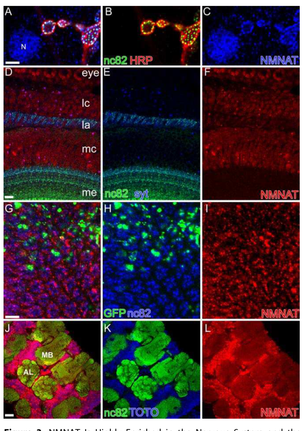

Drosophila Nmnat (nicotinamide mononucleotide adenylyltransferase) is an essential bifunctional protein with dual enzymatic and chaperone activities. Its primary catalytic function is the synthesis of NAD+ from nicotinamide mononucleotide (NMN) and ATP (EC 2.7.7.1), as well as the synthesis of deamido-NAD+ from nicotinate ribonucleotide and ATP (EC 2.7.7.18). As a moonlighting protein, Nmnat also functions as a stress-response chaperone with holdase activity, preventing toxic aggregation of misfolded proteins and promoting proteasome-mediated degradation of aggregation-prone substrates. The chaperone function is independent of the NAD+ synthesis activity and resides in the C-terminal domain. Nmnat is essential for viability and required for the maintenance of neuronal integrity, including photoreceptor cells, axons, and dendrites. The gene produces four isoforms via alternative splicing and alternative initiation, with distinct subcellular localizations and neuroprotective capacities: isoform D (cytoplasmic, strong holdase and refoldase, neuroprotective) and isoform C (nuclear, holdase only, pro-apoptotic under stress). Neurons preferentially upregulate the neuroprotective cytoplasmic isoform under stress conditions.
| GO Term | Evidence | Action | Reason |
|---|---|---|---|
|
GO:0034355
NAD+ biosynthetic process via the salvage pathway
|
IBA
GO_REF:0000033 |
ACCEPT |
Summary: Nmnat catalyzes the formation of NAD+ from NMN and ATP, the penultimate step in the NAD+ salvage pathway. This is its primary enzymatic function, confirmed by multiple experimental studies (PMID:17132048, PMID:19403820, PMID:26616331, PMID:36476387). The IBA annotation is well supported by phylogenetic inference across eukaryotic NMNATs.
Reason: The NAD+ salvage pathway role is the core enzymatic function of Nmnat. Phylogenetic inference is fully consistent with extensive direct experimental evidence in Drosophila.
Supporting Evidence:
PMID:36476387
NMN-D delays neurodegeneration caused by loss of the sole NMN-consuming and NAD+-synthesizing enzyme dNmnat
file:DROME/Nmnat/Nmnat-deep-research-falcon.md
these mutation–activity relationships experimentally support that the enzyme’s primary biochemical role is NMN adenylyltransferase activity in NAD\(^+\) biosynthesis/salvage.
|
|
GO:0000309
nicotinamide-nucleotide adenylyltransferase activity
|
IBA
GO_REF:0000033 |
ACCEPT |
Summary: GO:0000309 represents the core molecular function of Nmnat: catalyzing the reaction NMN + ATP -> NAD+ + PPi. This has been directly demonstrated by multiple IDA-level experiments (PMID:17132048, PMID:19403820, PMID:36476387). The IBA annotation is consistent with the phylogenetic analysis showing this activity across the NMNAT family.
Reason: This is the primary molecular function of Nmnat, confirmed experimentally and by phylogenetic inference. The IBA annotation is at the correct level of specificity.
Supporting Evidence:
PMID:19403820
Nmnat enzymes with diverse sequences and structures from various species
PMID:36476387
the sole NMN-consuming and NAD+-synthesizing enzyme dNmnat
file:DROME/Nmnat/Nmnat-deep-research-falcon.md
recombinant dNmnat protein exhibits NMNAT activity comparable to human NMNAT3 in an in vitro coupled assay, and mutations in conserved catalytic/substrate-binding motifs sharply reduce enzymatic activity, confirming that CG13645 encodes a bona fide NMNAT enzyme.
|
|
GO:0004515
nicotinate-nucleotide adenylyltransferase activity
|
IBA
GO_REF:0000033 |
ACCEPT |
Summary: GO:0004515 represents the NaMN adenylyltransferase activity (EC 2.7.7.18), converting nicotinate ribonucleotide + ATP to deamido-NAD+ + PPi. UniProt assigns EC 2.7.7.18 to Nmnat based on RuleBase evidence. The IBA annotation is phylogenetically inferred from orthologs across the NMNAT family, several of which have dual-substrate specificity.
Reason: NMNAT family members characteristically possess dual-substrate specificity for both NMN (GO:0000309) and NaMN (GO:0004515). The IBA annotation is consistent with the known biochemistry of this enzyme family and the UniProt-assigned EC 2.7.7.18.
Supporting Evidence:
PMID:36476387
the sole NMN-consuming and NAD+-synthesizing enzyme dNmnat
|
|
GO:0000166
nucleotide binding
|
IEA
GO_REF:0000043 |
ACCEPT |
Summary: IEA annotation from UniProtKB keyword KW-0547 (Nucleotide-binding). Nmnat binds ATP as a substrate for its adenylyltransferase reaction. This is a very broad parent term that is subsumed by the more specific GO:0005524 (ATP binding) and the specific catalytic activities already annotated.
Reason: While very general, this IEA annotation is not wrong. It is subsumed by more specific annotations (ATP binding, nicotinamide-nucleotide adenylyltransferase activity) but acceptable as an IEA-level annotation from keyword mapping.
|
|
GO:0000309
nicotinamide-nucleotide adenylyltransferase activity
|
IEA
GO_REF:0000120 |
ACCEPT |
Summary: IEA annotation from InterPro/EC mapping. Consistent with the experimentally validated IDA annotations and the IBA annotation for the same term.
Reason: Redundant with IBA and IDA annotations for the same term, but IEA annotations are expected to exist alongside higher-evidence annotations. The mapping is correct.
|
|
GO:0003824
catalytic activity
|
IEA
GO_REF:0000002 |
ACCEPT |
Summary: IEA annotation from InterPro domain IPR004821 (CTP_transf_like). This is a very broad parent term. The more specific catalytic activities (GO:0000309, GO:0004515) are already annotated with stronger evidence.
Reason: Broad but not wrong. This InterPro-based IEA annotation is consistent with the known enzymatic function. More specific child terms are annotated at IDA level.
|
|
GO:0004515
nicotinate-nucleotide adenylyltransferase activity
|
IEA
GO_REF:0000120 |
ACCEPT |
Summary: IEA annotation from InterPro/EC 2.7.7.18 mapping. Consistent with the IBA annotation and the ISS annotation for the same term.
Reason: Redundant with IBA and ISS annotations for the same term. The mapping is correct.
|
|
GO:0005524
ATP binding
|
IEA
GO_REF:0000043 |
ACCEPT |
Summary: IEA annotation from UniProtKB keyword KW-0067 (ATP-binding). Nmnat uses ATP as a substrate in its adenylyltransferase reaction, so ATP binding is inherent to the enzymatic function. NMNAT also shares structural similarity with known chaperones and its chaperone function appears to involve the ATP-binding domain (PMID:18344983).
Reason: ATP binding is an essential aspect of Nmnat's enzymatic mechanism and also relevant to its chaperone function. The IEA annotation is correct.
Supporting Evidence:
PMID:18344983
it shares significant structural similarity with known chaperones
|
|
GO:0005634
nucleus
|
IEA
GO_REF:0000044 |
ACCEPT |
Summary: IEA annotation from UniProt subcellular location mapping. Nuclear localization of Nmnat has been experimentally confirmed. Nmnat contains a C-terminal nuclear localization signal (KQKR at position 380-383; PMID:26616331). Isoform C is specifically nuclear-localized (PMID:26616331).
Reason: Nuclear localization is experimentally validated by multiple studies including PMID:26616331 which characterized isoform-specific localization patterns.
Supporting Evidence:
file:DROME/Nmnat/Nmnat-deep-research-falcon.md
**Abundant in neuronal nuclei** (brain and ventral nerve cord), persisting into adulthood.
|
|
GO:0005737
cytoplasm
|
IEA
GO_REF:0000044 |
ACCEPT |
Summary: IEA annotation from UniProt subcellular location mapping. Cytoplasmic localization is experimentally confirmed by IDA (PMID:26616331). Nmnat localizes predominantly to the cytoplasm (PMID:19403820), and isoform D is specifically cytoplasmic (PMID:26616331).
Reason: Cytoplasmic localization is confirmed by direct observation. Consistent with the IDA annotation from PMID:26616331.
|
|
GO:0009165
nucleotide biosynthetic process
|
IEA
GO_REF:0000117 |
ACCEPT |
Summary: IEA annotation from ARBA machine learning. NAD+ is a dinucleotide, so Nmnat's enzymatic activity directly contributes to nucleotide biosynthesis. This is a broad parent term that encompasses the more specific NAD+ biosynthetic process annotations.
Reason: Broad but accurate. NAD+ is a dinucleotide and Nmnat catalyzes its synthesis. More specific terms (GO:0009435, GO:0034355) are annotated at higher evidence levels.
|
|
GO:0009435
NAD+ biosynthetic process
|
IEA
GO_REF:0000120 |
ACCEPT |
Summary: IEA annotation from InterPro/UniPathway mapping. NAD+ biosynthesis is the core biological process for Nmnat. The more specific child term GO:0034355 (NAD+ biosynthetic process via the salvage pathway) is annotated at IBA and IMP levels.
Reason: This broader NAD+ biosynthesis term is correct and encompasses both de novo and salvage pathways. More specific annotations exist at higher evidence levels.
|
|
GO:0016740
transferase activity
|
IEA
GO_REF:0000043 |
ACCEPT |
Summary: IEA annotation from UniProtKB keyword KW-0808 (Transferase). Nmnat is indeed a nucleotidyltransferase. This is a very broad parent term subsumed by the specific adenylyltransferase activities already annotated.
Reason: Very broad but correct. Subsumed by more specific child terms at higher evidence levels.
|
|
GO:0016779
nucleotidyltransferase activity
|
IEA
GO_REF:0000120 |
ACCEPT |
Summary: IEA annotation from InterPro/keyword mapping. Nmnat is an adenylyltransferase, which is a type of nucleotidyltransferase. This is a parent term of the more specific GO:0070566 (adenylyltransferase activity) and the specific enzyme activities.
Reason: Correct intermediate-level term. Consistent with the hierarchy of more specific annotations already present.
|
|
GO:0019363
pyridine nucleotide biosynthetic process
|
IEA
GO_REF:0000043 |
ACCEPT |
Summary: IEA annotation from UniProtKB keyword KW-0662 (Pyridine nucleotide biosynthesis). NAD+ is a pyridine nucleotide, so this annotation is accurate for the biosynthetic process Nmnat participates in.
Reason: Correct. NAD+ is a pyridine nucleotide and Nmnat catalyzes a key step in its biosynthesis. Consistent with more specific annotations.
|
|
GO:0048786
presynaptic active zone
|
IEA
GO_REF:0000044 |
ACCEPT |
Summary: IEA annotation from UniProt subcellular location mapping. Presynaptic active zone localization is experimentally supported. The IMP annotation from PMID:30692130 shows that excess dNmnat disrupts active zone ultrastructure, confirming its presence at this location.
Reason: Presynaptic localization is experimentally validated. Consistent with the IMP annotation for the same term from PMID:30692130.
Supporting Evidence:
PMID:30692130
excess dNmnat is necessary in highwire mutants and sufficient in wild-type larvae to reduce quantal content, likely via disruption of active zone ultrastructure
file:DROME/Nmnat/Nmnat-deep-research-falcon.md
Present as **punctate labeling at synapses/terminals**, partially colocalizing with the active zone marker nc82, including in photoreceptor terminals of the adult lamina.
|
|
GO:0070566
adenylyltransferase activity
|
IEA
GO_REF:0000117 |
ACCEPT |
Summary: IEA annotation from ARBA machine learning. Nmnat is an adenylyltransferase that transfers the adenylyl group from ATP to NMN or NaMN. This is a parent term of the more specific GO:0000309 and GO:0004515.
Reason: Correct intermediate-level term. Consistent with the known enzymatic mechanism and more specific annotations at higher evidence levels.
|
|
GO:0004515
nicotinate-nucleotide adenylyltransferase activity
|
IDA
PMID:36476387 The NAD(+) precursor NMN activates dSarm to trigger axon deg... |
ACCEPT |
Summary: IDA annotation from the Llobet Rosell et al. 2022 study. This paper demonstrates that dNmnat is the sole NMN-consuming and NAD+-synthesizing enzyme in Drosophila. The study uses enzymatic assays and genetic manipulation to show that lowering NMN levels via NMN-Deamidase expression preserves axons, while loss of dNmnat causes neurodegeneration. The IDA evidence for NaMN adenylyltransferase activity (EC 2.7.7.18) is consistent with the dual-substrate specificity of NMNAT enzymes.
Reason: Direct assay evidence for the NaMN adenylyltransferase activity. The study clearly demonstrates that Nmnat is the sole NAD+-synthesizing enzyme in Drosophila.
Supporting Evidence:
PMID:36476387
loss of the sole NMN-consuming and NAD+-synthesizing enzyme dNmnat
|
|
GO:1990535
neuron projection maintenance
|
IMP
PMID:21596138 Nmnat exerts neuroprotective effects in dendrites and axons. |
ACCEPT |
Summary: IMP annotation from Wen et al. 2011. This study demonstrated that Nmnat is required for the maintenance of both axonal and dendritic integrity in Drosophila. Loss of Nmnat caused dendritic branches to show increased retraction and decreased growth, leading to progressive coverage defects. Sensory axons showed severe degeneration upon complete loss.
Reason: Well-supported by mutant phenotype analysis. Neuron projection maintenance is a genuine biological process that Nmnat participates in, through its chaperone-like neuroprotective function. This is a well-established function (possibly core given the strong separation-of-function evidence), distinct from but coexisting with the enzymatic NAD+-synthesis role. Falcon deep research corroborates that this neuroprotective/maintenance activity is genuine and partially uncoupled from NAD+ synthesis, so it is retained as a real function rather than an over-annotation.
Supporting Evidence:
PMID:21596138
essential role for endogenous Nmnat function in the maintenance of both axonal and dendritic integrity
file:DROME/Nmnat/Nmnat-deep-research-falcon.md
A central, well-cited observation in *Drosophila* is that dNmnat’s **neuroprotective/maintenance function can be partially uncoupled from its NAD\(^+\)-synthesis activity**. Catalytically impaired mutants that retain <1% enzymatic activity (e.g., WR) can still strongly rescue neurodegeneration phenotypes in vivo (e.g., photoreceptor maintenance)
|
|
GO:0000309
nicotinamide-nucleotide adenylyltransferase activity
|
IDA
PMID:36476387 The NAD(+) precursor NMN activates dSarm to trigger axon deg... |
ACCEPT |
Summary: IDA annotation from the Llobet Rosell et al. 2022 study. The paper demonstrates that dNmnat is the sole NMN-consuming NAD+ synthase in Drosophila. While the primary focus is on NMN accumulation driving axon degeneration via dSarm activation, the study confirms the NMN adenylyltransferase activity of dNmnat through genetic manipulation of NMN levels.
Reason: Direct experimental evidence confirming the primary catalytic function. Consistent with multiple other IDA annotations for the same activity from earlier studies.
Supporting Evidence:
PMID:36476387
NMN-D delays neurodegeneration caused by loss of the sole NMN-consuming and NAD+-synthesizing enzyme dNmnat
|
|
GO:0034355
NAD+ biosynthetic process via the salvage pathway
|
IMP
PMID:36476387 The NAD(+) precursor NMN activates dSarm to trigger axon deg... |
ACCEPT |
Summary: IMP annotation from Llobet Rosell et al. 2022. The study shows that dNmnat loss leads to neurodegeneration via NMN accumulation, and that expression of NMN-Deamidase (which converts NMN to NaMN, altering the metabolic flux) preserves axons. This demonstrates that dNmnat functions in the NAD+ salvage pathway by consuming NMN.
Reason: Strong mutant phenotype evidence supporting the role in NAD+ salvage pathway biosynthesis. The study demonstrates the in vivo metabolic role of dNmnat.
Supporting Evidence:
PMID:36476387
NMN-D alters the NAD+ metabolic flux by lowering NMN, while NAD+ remains unchanged in vivo
|
|
GO:0004515
nicotinate-nucleotide adenylyltransferase activity
|
ISS
GO_REF:0000024 |
ACCEPT |
Summary: ISS annotation transferred from human NMNAT3 (UniProtKB:Q9HAN9) based on sequence similarity. The NaMN adenylyltransferase activity (EC 2.7.7.18) is a conserved function across the NMNAT family. This is consistent with the IBA and IDA annotations for the same term.
Reason: Valid ISS transfer from a well-characterized ortholog. Consistent with the dual-substrate specificity known for the NMNAT family.
|
|
GO:0005739
mitochondrion
|
ISS
GO_REF:0000024 |
UNDECIDED |
Summary: ISS annotation transferred from human NMNAT3 (UniProtKB:Q96T66), which is known to localize to mitochondria. However, Drosophila has only a single Nmnat gene, unlike mammals which have three NMNAT isoenzymes with distinct subcellular localizations (NMNAT1: nuclear, NMNAT2: cytoplasmic/Golgi, NMNAT3: mitochondrial). The subcellular localization pattern of mammalian NMNAT3 may not directly transfer to the single Drosophila ortholog.
Reason: The ISS transfer from human NMNAT3 is questionable because Drosophila has a single Nmnat that performs the functions of all three mammalian NMNAT isoenzymes. The experimentally determined localizations for Drosophila Nmnat include nucleus, cytoplasm, presynaptic active zone, and neuromuscular junction, but not specifically mitochondria. No direct experimental evidence for mitochondrial localization of dNmnat was found in the available publications.
|
|
GO:0031594
neuromuscular junction
|
IDA
PMID:30692130 The E3 ligase Highwire promotes synaptic transmission by tar... |
ACCEPT |
Summary: IDA annotation from Russo et al. 2019. The study examines how the E3 ubiquitin ligase Highwire regulates dNmnat at the neuromuscular junction (NMJ). The study demonstrates that dNmnat is present at the NMJ and that its levels are regulated by Highwire-mediated ubiquitination. Excess dNmnat impairs evoked release by disrupting active zone ultrastructure.
Reason: Direct observation of Nmnat at the neuromuscular junction. The study provides functional evidence for Nmnat's role at this location.
Supporting Evidence:
PMID:30692130
The ubiquitin ligase Highwire restrains synaptic growth and promotes evoked neurotransmission at NMJ synapses in Drosophila
|
|
GO:0048786
presynaptic active zone
|
IMP
PMID:30692130 The E3 ligase Highwire promotes synaptic transmission by tar... |
ACCEPT |
Summary: IMP annotation from Russo et al. 2019. The study shows that excessive dNmnat impairs evoked release by disrupting active zone ultrastructure, providing functional evidence that Nmnat localizes to and affects the presynaptic active zone. This is consistent with the earlier observation of punctate presynaptic localization (PMID:17132048).
Reason: Mutant phenotype evidence showing functional impact at the presynaptic active zone. Consistent with earlier direct localization data (PMID:17132048).
Supporting Evidence:
PMID:30692130
excess dNmnat is necessary in highwire mutants and sufficient in wild-type larvae to reduce quantal content, likely via disruption of active zone ultrastructure
|
|
GO:1900074
negative regulation of neuromuscular synaptic transmission
|
IDA
PMID:30692130 The E3 ligase Highwire promotes synaptic transmission by tar... |
KEEP AS NON CORE |
Summary: IDA annotation from Russo et al. 2019. The study shows that excess dNmnat impairs evoked neurotransmitter release at the NMJ and that this requires catalytically active dNmnat. However, this effect appears to be a consequence of Nmnat overabundance when Highwire-mediated degradation is disrupted, rather than a normal physiological role. The negative regulation of synaptic transmission is an artifact of disrupted homeostatic regulation rather than a core function.
Reason: While experimentally demonstrated, the negative regulation of neuromuscular synaptic transmission is a consequence of dNmnat overaccumulation when normal Highwire-mediated turnover is disrupted. This is not a core evolved function of Nmnat but rather reflects the need for tight regulation of its levels at the synapse.
Supporting Evidence:
PMID:30692130
Catalytically active dNmnat is required to drive defects in evoked release
|
|
GO:0005737
cytoplasm
|
IDA
PMID:26616331 Alternative splicing of Drosophila Nmnat functions as a swit... |
ACCEPT |
Summary: IDA annotation from Ruan et al. 2015. The study demonstrates that isoform D is cytoplasmic and that the cytoplasmic localization is associated with the neuroprotective isoform. The K380R mutation in the nuclear localization signal shifts localization from nuclear to cytoplasmic. This study also confirmed earlier findings of cytoplasmic localization (PMID:19403820).
Reason: Direct observation of cytoplasmic localization, specifically characterizing isoform-specific localization patterns. Core localization for the neuroprotective functions of Nmnat.
Supporting Evidence:
PMID:26616331
When expressed with a pan-neuronal driver nervana-GAL4, PC is highly enriched in the cell body, while cytPC and PD are predominantly cytoplasmic, consistent with the localization pattern in transfected cells.
|
|
GO:0043025
neuronal cell body
|
IDA
PMID:26616331 Alternative splicing of Drosophila Nmnat functions as a swit... |
ACCEPT |
Summary: IDA annotation from Ruan et al. 2015. The study demonstrates neuronal localization of Nmnat and characterizes the alternative splicing that produces isoforms with distinct subcellular distributions in neurons. Earlier work (PMID:17132048) used the visual system of Drosophila as a model to study nmnat function in neurons.
Reason: Direct observation of Nmnat in neuronal cell bodies. Consistent with the known expression pattern and functional role in neuroprotection.
Supporting Evidence:
PMID:17132048
we use the visual system of Drosophila as a model system to address these issues
|
|
GO:0051082
unfolded protein binding
|
IDA
PMID:18344983 NAD synthase NMNAT acts as a chaperone to protect against ne... |
MODIFY |
Summary: IDA annotation from Zhai et al. 2008 (Nature). This landmark study demonstrated that NMNAT acts as a chaperone to protect against neurodegeneration. The study showed that NMNAT displays chaperone function in biochemical assays and cultured cells, shares structural similarity with known chaperones, is upregulated by proteotoxic stress, and is recruited with Hsp70 into protein aggregates. The chaperone function is independent of NAD+ synthesis activity (the H61A catalytic mutant retains chaperone activity). The follow-up study (PMID:26616331) further characterized the chaperone activity as holdase activity (preventing aggregation) rather than refoldase activity for isoform C, while isoform D shows both holdase and refoldase activity. GO:0051082 (unfolded protein binding) is proposed for obsoletion. The experimentally demonstrated activity is better described as misfolded protein binding (GO:0051787) since the studies show NMNAT preventing aggregation of misfolded proteins and being recruited to protein aggregates.
Reason: GO:0051082 is proposed for obsoletion. The underlying experimental evidence is strong and well-characterized: Nmnat acts as a holdase chaperone that prevents toxic aggregation of misfolded proteins. The best replacement term is GO:0051787 (misfolded protein binding), which accurately captures NMNAT's demonstrated ability to bind to and prevent aggregation of misfolded/aggregation-prone proteins. The term GO:0140309 (unfolded protein carrier activity) is not appropriate because there is no evidence that NMNAT escorts proteins between cellular compartments. Note that the chaperone holdase activity is a secondary moonlighting function; the primary function is NAD+ synthesis.
Proposed replacements:
misfolded protein binding
Supporting Evidence:
PMID:18344983
NMNAT displays chaperone function both in biochemical assays and cultured cells, and it shares significant structural similarity with known chaperones
PMID:18344983
it is upregulated in the brain upon overexpression of poly-glutamine expanded protein and recruited with the chaperone Hsp70 into protein aggregates
file:DROME/Nmnat/Nmnat-deep-research-falcon.md
dNmnat/NMNAT is described as binding misfolded species (e.g., Tau oligomers), promoting their ubiquitination/clearance, and that reduced endogenous NMNAT exacerbates Tau-induced degeneration, while NMNAT expression suppresses degeneration in Drosophila models.
|
|
GO:0000309
nicotinamide-nucleotide adenylyltransferase activity
|
IDA
PMID:19403820 Nicotinamide mononucleotide adenylyl transferase-mediated ax... |
ACCEPT |
Summary: IDA annotation from Sasaki et al. 2009. The study used Drosophila Nmnat among NMNAT enzymes from diverse species to demonstrate that enzymatic activity is important for axonal protection. The study showed that Nmnat enzymes with diverse sequences from various species all mediate robust axonal protection after axotomy, and that mutants with reduced enzymatic activity lacked axon protective activity.
Reason: Direct assay evidence for the NMN adenylyltransferase activity. The study also demonstrated the importance of enzymatic activity for axonal protection, though steady-state NAD+ levels were not changed.
Supporting Evidence:
PMID:19403820
Nmnat1 enzymatic activity is important for axonal protection as mutants with reduced enzymatic activity lacked axon protective activity
|
|
GO:0000309
nicotinamide-nucleotide adenylyltransferase activity
|
IDA
PMID:17132048 Drosophila NMNAT maintains neural integrity independent of i... |
ACCEPT |
Summary: IDA annotation from the foundational Zhai et al. 2006 study. This study isolated the first nmnat mutations in a multicellular organism and demonstrated that Nmnat catalyzes the formation of NAD+ from NMN and ATP. The study showed that enzymatically inactive NMNAT (H61A mutant) retains strong neuroprotective effects, establishing the separation of enzymatic and neuroprotective functions.
Reason: The foundational experimental demonstration of NMN adenylyltransferase activity in Drosophila Nmnat, using direct enzymatic assays and mutagenesis.
Supporting Evidence:
PMID:17132048
the NAD synthase NMNAT (nicotinamide mononucleotide adenylyltransferase 1)
PMID:17132048
enzymatically inactive NMNAT protein retains strong neuroprotective effects
|
|
GO:0045494
photoreceptor cell maintenance
|
IMP
PMID:17132048 Drosophila NMNAT maintains neural integrity independent of i... |
KEEP AS NON CORE |
Summary: IMP annotation from Zhai et al. 2006. The study used the Drosophila visual system as a model to demonstrate that loss of nmnat causes rapid and severe neurodegeneration in photoreceptor cells. The degeneration could be attenuated by blocking neuronal activity. Photoreceptor maintenance was rescued by enzymatically inactive NMNAT, indicating the neuroprotective function is NAD-independent.
Reason: While experimentally well-supported, photoreceptor cell maintenance is a tissue-specific manifestation of the broader neuroprotective function of Nmnat. The core function is neuronal maintenance in general, and photoreceptor cells are one of many cell types where this is observed. This is a non-core annotation reflecting the specific experimental model used rather than a unique photoreceptor-specific function.
Supporting Evidence:
PMID:17132048
Loss of nmnat causes a rapid and severe neurodegeneration that can be attenuated by blocking neuronal activity
file:DROME/Nmnat/Nmnat-deep-research-falcon.md
Loss-of-function of *nmnat* causes rapid, progressive neurodegeneration in the visual system, including defective ERGs and ultrastructural synaptic abnormalities
|
Exported on March 22, 2026 at 02:13 AM
Organism: Drosophila melanogaster
Sequence:
MIVKISWPKNNITSECFRRFGSFKRRSKSKKMSAFIEETKSLLPRIAFIACGCFSPPTPMHLRMFEIAKDHFEMQGTHRVVGGIISPTHDSYGKKGLASALDRCAMVKLATQSSNWIRLSDWEVHQNQWMRTQAVLQHHQNYINNHINSGGGGGDDGENTHLPGWLPRGLHDSRDPVHLKLLCGADLLESFAVPGLWAEADIEDIVANHGLVVITRAGSNPGKFIFDSDILTKYQSNITLITNWVPNEVSSTLIRRLLGRGQSVKYLLDDLVLEYIKRQRLFNFKSKYITDAVRPNHLLFNHAYTDNNKNANSYSIGDQLEQDMDESDTPSPQLQHTPTSRVFCCGEVPLRGSKVLRSGPGQAVQVITMQADEKEESQAKKQKISQVQL
I begin with the InterPro architecture. The core of the protein is a continuous catalytic module spanning roughly residues 45–291 that carries multiple concordant annotations: IPR014729 (Rossmann-like alpha/beta/alpha sandwich fold, residues 45–291) defines the overall nucleotide-handling scaffold; IPR051182 (Eukaryotic NMN adenylyltransferase family, residues 45–285), IPR045094 (Nicotinamide/nicotinate mononucleotide adenylyltransferase, eukaryotic family, residues 46–282), and IPR005248 (Nicotinate/nicotinamide nucleotide adenylyltransferase family, residues 49–281) all specify an NMNAT-class adenylyltransferase; and IPR004821 (Cytidyltransferase-like domain, residues 49–256) pinpoints the catalytic fold used by adenylyl- and cytidyltransferases. The tight overlap of these domains indicates a soluble, oligomerization-prone enzyme that binds ATP or AMN and catalyzes adenylate transfer. The Rossmann-like sandwich provides the phosphate-binding and alignment geometry necessary for forming diadenosine phosphate intermediates and driving NAD biosynthesis.
From this architecture, the molecular function follows directly. The cytidyltransferase-like core and NMNAT-family signatures dictate adenylyltransferase chemistry: transferring AMP from ATP to nicotinamide mononucleotide (NMN) or nicotinate mononucleotide (NaMN), with pyrophosphate release. This chemistry corresponds to GO:0016740 (GO: molecular_function label), and in biochemical terms is an adenylyltransferase reaction that builds NAD and, by extension, NaAD.
This enzymatic role causally links to NAD metabolism and salvage. NMNATs supply NAD biosynthetic pathways by converting NMN to NAD+ (and NaMN to NAD+ via upstream routing), thereby sustaining cellular pools for redox reactions and signaling. That places the enzyme squarely in GO:0016740 (molecular_function) and connects upward to GO:0006757 (NAD metabolic process) and GO:0009435 (NAD biosynthetic process). By maintaining NAD levels, the enzyme supports energy balance and transcriptional responses that depend on NAD availability.
Cellular location is inferred from the soluble Rossmann-like architecture and absence of transmembrane features: such NMNAT-family enzymes function as cytosolic oligomers that assemble into higher-order complexes. This supports a soluble compartment assignment consistent with GO:0005737 cytoplasm, aligning with the need to service abundant cytosolic NAD-utilizing pathways.
Mechanistically, the enzyme likely forms a homomeric assembly that creates a composite active site with a conserved lysine/arginine-lined pocket for phosphate transfer. It binds ATP and NMN/NaMN, forms an AMP-enzyme intermediate, and releases AMP-linked products to generate NAD or NaAD. I hypothesize that it cooperates with cytosolic NAD-salvage and signaling hubs: transiently associating with NAMPT and NME to channel precursors; with sirtuin and PARP families that draw on NAD; and with cytosolic scaffolds that regulate nucleotide metabolism. These partnerships would localize NAD production near its major consumers, stabilizing redox and signaling homeostasis in the cytoplasm.
A soluble cytoplasmic adenylyltransferase that builds cellular NAD pools by converting nicotinamide/nicotinate mononucleotides with ATP to form diadenosine phosphate intermediates and ultimately regenerate NAD. Its Rossmann-like catalytic core supports oligomerization and precise phosphate handling, enabling efficient NAD biosynthesis and salvage in the cytoplasm. By sustaining NAD-dependent redox and signaling pathways, it helps maintain energy balance and transcriptional responses.
Has a role in NAD biosynthesis.
IPR014729, homologous_superfamily) — residues 45-291IPR051182, family) — residues 45-285IPR045094, family) — residues 46-282IPR005248, family) — residues 49-281IPR004821, domain) — residues 49-256Molecular Function: molecular_function (GO:0003674), binding (GO:0005488), catalytic activity (GO:0003824), GO:0003824 GO:0016740 (GO:0016740), protein binding (GO:0005515), unfolded protein binding (GO:0051082), transferase activity, transferring phosphorus-containing groups (GO:0016772), nucleotidyltransferase activity (GO:0016779), adenylyltransferase activity (GO:0070566)
Biological Process: biological_process (GO:0008150), cellular process (GO:0009987), biological regulation (GO:0065007), regulation of biological process (GO:0050789), negative regulation of biological process (GO:0048519), multicellular organismal process (GO:0032501), homeostatic process (GO:0042592), regulation of signaling (GO:0023051), cellular component organization or biogenesis (GO:0071840), negative regulation of signaling (GO:0023057), photoreceptor cell maintenance (GO:0045494), multicellular organismal-level homeostasis (GO:0048871), negative regulation of cellular process (GO:0048523), regulation of cellular process (GO:0050794), cellular component organization (GO:0016043), negative regulation of cell communication (GO:0010648), regulation of trans-synaptic signaling (GO:0099177), tissue homeostasis (GO:0001894), regulation of cell communication (GO:0010646), anatomical structure homeostasis (GO:0060249), negative regulation of synaptic transmission (GO:0050805), cell projection organization (GO:0030030), retina homeostasis (GO:0001895), postsynapse organization (GO:0099173), cell junction organization (GO:0034330), negative regulation of neuromuscular synaptic transmission (GO:1900074), cellular component maintenance (GO:0043954), modulation of chemical synaptic transmission (GO:0050804), synapse organization (GO:0050808), plasma membrane bounded cell projection organization (GO:0120036), dendritic spine organization (GO:0097061), regulation of neuromuscular synaptic transmission (GO:1900073), neuron projection organization (GO:0106027)
Cellular Component: cellular_component (GO:0005575), cellular anatomical entity (GO:0110165), presynaptic active zone (GO:0048786), intracellular anatomical structure (GO:0005622), presynapse (GO:0098793), somatodendritic compartment (GO:0036477), cytoplasm (GO:0005737), cell junction (GO:0030054), cell body (GO:0044297), neuronal cell body (GO:0043025), synapse (GO:0045202), neuromuscular junction (GO:0031594)
Generated by BioReason
Exported on March 22, 2026 at 02:13 AM
Organism: Drosophila melanogaster
Sequence:
MIVKISWPKNNITSECFRRFGSFKRRSKSKKMSAFIEETKSLLPRIAFIACGCFSPPTPMHLRMFEIAKDHFEMQGTHRVVGGIISPTHDSYGKKGLASALDRCAMVKLATQSSNWIRLSDWEVHQNQWMRTQAVLQHHQNYINNHINSGGGGGDDGENTHLPGWLPRGLHDSRDPVHLKLLCGADLLESFAVPGLWAEADIEDIVANHGLVVITRAGSNPGKFIFDSDILTKYQSNITLITNWVPNEVSSTLIRRLLGRGQSVKYLLDDLVLEYIKRQRLFNFKSKYITDAVRPNHLLFNHAYTDNNKNANSYSIGDQLEQDMDESDTPSPQLQHTPTSRVFCCGEVPLRGSKVLRSGPGQAVQVITMQADEKEESQAKKQKISQVQL
I begin with the InterPro architecture. The core of the protein is a continuous catalytic module spanning roughly residues 45–291 that carries multiple concordant annotations: IPR014729 (Rossmann-like alpha/beta/alpha sandwich fold, residues 45–291) defines the overall nucleotide-handling scaffold; IPR051182 (Eukaryotic NMN adenylyltransferase family, residues 45–285), IPR045094 (Nicotinamide/nicotinate mononucleotide adenylyltransferase, eukaryotic family, residues 46–282), and IPR005248 (Nicotinate/nicotinamide nucleotide adenylyltransferase family, residues 49–281) all specify an NMNAT-class adenylyltransferase; and IPR004821 (Cytidyltransferase-like domain, residues 49–256) pinpoints the catalytic fold used by adenylyl- and cytidyltransferases. The tight overlap of these domains indicates a soluble, oligomerization-prone enzyme that binds ATP or AMN and catalyzes adenylate transfer. The Rossmann-like sandwich provides the phosphate-binding and alignment geometry necessary for forming diadenosine phosphate intermediates and driving NAD biosynthesis.
From this architecture, the molecular function follows directly. The cytidyltransferase-like core and NMNAT-family signatures dictate adenylyltransferase chemistry: transferring AMP from ATP to nicotinamide mononucleotide (NMN) or nicotinate mononucleotide (NaMN), with pyrophosphate release. This chemistry corresponds to GO:0016740 (GO: molecular_function label), and in biochemical terms is an adenylyltransferase reaction that builds NAD and, by extension, NaAD.
This enzymatic role causally links to NAD metabolism and salvage. NMNATs supply NAD biosynthetic pathways by converting NMN to NAD+ (and NaMN to NAD+ via upstream routing), thereby sustaining cellular pools for redox reactions and signaling. That places the enzyme squarely in GO:0016740 (molecular_function) and connects upward to GO:0006757 (NAD metabolic process) and GO:0009435 (NAD biosynthetic process). By maintaining NAD levels, the enzyme supports energy balance and transcriptional responses that depend on NAD availability.
Cellular location is inferred from the soluble Rossmann-like architecture and absence of transmembrane features: such NMNAT-family enzymes function as cytosolic oligomers that assemble into higher-order complexes. This supports a soluble compartment assignment consistent with GO:0005737 cytoplasm, aligning with the need to service abundant cytosolic NAD-utilizing pathways.
Mechanistically, the enzyme likely forms a homomeric assembly that creates a composite active site with a conserved lysine/arginine-lined pocket for phosphate transfer. It binds ATP and NMN/NaMN, forms an AMP-enzyme intermediate, and releases AMP-linked products to generate NAD or NaAD. I hypothesize that it cooperates with cytosolic NAD-salvage and signaling hubs: transiently associating with NAMPT and NME to channel precursors; with sirtuin and PARP families that draw on NAD; and with cytosolic scaffolds that regulate nucleotide metabolism. These partnerships would localize NAD production near its major consumers, stabilizing redox and signaling homeostasis in the cytoplasm.
A soluble cytoplasmic adenylyltransferase that builds cellular NAD pools by converting nicotinamide/nicotinate mononucleotides with ATP to form diadenosine phosphate intermediates and ultimately regenerate NAD. Its Rossmann-like catalytic core supports oligomerization and precise phosphate handling, enabling efficient NAD biosynthesis and salvage in the cytoplasm. By sustaining NAD-dependent redox and signaling pathways, it helps maintain energy balance and transcriptional responses.
Has a role in NAD biosynthesis.
IPR014729, homologous_superfamily) — residues 45-291IPR051182, family) — residues 45-285IPR045094, family) — residues 46-282IPR005248, family) — residues 49-281IPR004821, domain) — residues 49-256Molecular Function: molecular_function (GO:0003674), binding (GO:0005488), catalytic activity (GO:0003824), GO:0003824 GO:0016740 (GO:0016740), protein binding (GO:0005515), unfolded protein binding (GO:0051082), transferase activity, transferring phosphorus-containing groups (GO:0016772), nucleotidyltransferase activity (GO:0016779), adenylyltransferase activity (GO:0070566)
Biological Process: biological_process (GO:0008150), cellular process (GO:0009987), biological regulation (GO:0065007), regulation of biological process (GO:0050789), negative regulation of biological process (GO:0048519), multicellular organismal process (GO:0032501), homeostatic process (GO:0042592), regulation of signaling (GO:0023051), cellular component organization or biogenesis (GO:0071840), negative regulation of signaling (GO:0023057), photoreceptor cell maintenance (GO:0045494), multicellular organismal-level homeostasis (GO:0048871), negative regulation of cellular process (GO:0048523), regulation of cellular process (GO:0050794), cellular component organization (GO:0016043), negative regulation of cell communication (GO:0010648), regulation of trans-synaptic signaling (GO:0099177), tissue homeostasis (GO:0001894), regulation of cell communication (GO:0010646), anatomical structure homeostasis (GO:0060249), negative regulation of synaptic transmission (GO:0050805), cell projection organization (GO:0030030), retina homeostasis (GO:0001895), postsynapse organization (GO:0099173), cell junction organization (GO:0034330), negative regulation of neuromuscular synaptic transmission (GO:1900074), cellular component maintenance (GO:0043954), modulation of chemical synaptic transmission (GO:0050804), synapse organization (GO:0050808), plasma membrane bounded cell projection organization (GO:0120036), dendritic spine organization (GO:0097061), regulation of neuromuscular synaptic transmission (GO:1900073), neuron projection organization (GO:0106027)
Cellular Component: cellular_component (GO:0005575), cellular anatomical entity (GO:0110165), presynaptic active zone (GO:0048786), intracellular anatomical structure (GO:0005622), presynapse (GO:0098793), somatodendritic compartment (GO:0036477), cytoplasm (GO:0005737), cell junction (GO:0030054), cell body (GO:0044297), neuronal cell body (GO:0043025), synapse (GO:0045202), neuromuscular junction (GO:0031594)
Generated by BioReason
The research report should be a detailed narrative explaining the function, biological processes, and localization of the gene product. Citations should be given for all claims.
You should prioritize authoritative reviews and primary scientific literature when conducting research. You can supplement
this with annotations you find in gene/protein databases, but these can be outdated or inaccurate.
We are specifically interested in the primary function of the gene - for enzymes, what reaction is catalyzed, and what is the substrate specificity? For transporters, what is the substrate? For structural proteins or adapters, what is the broader structural role? For signaling molecules, what is the role in the pathway.
We are interested in where in or outside the cell the gene product carries out its function.
We are also interested in the signaling or biochemical pathways in which the gene functions. We are less interested in broad pleiotropic effects, except where these elucidate the precise role.
Include evidence where possible. We are interested in both experimental evidence as well as inference from structure, evolution, or bioinformatic analysis. Precise studies should be prioritized over high-throughput, where available.
The target gene/protein is Drosophila melanogaster Nmnat (also referred to as dNmnat), encoded by CG13645. Foundational genetics and rescue experiments identify CG13645 as nmnat, encoding a nicotinamide mononucleotide adenylyltransferase (NMNAT) with conserved catalytic motifs and measurable NMNAT enzymatic activity, consistent with UniProt Q9VC03 and the eukaryotic NMNAT family assignment. (zhai2006drosophilanmnatmaintains pages 4-5, zhai2006drosophilanmnatmaintains pages 5-7)
NMNATs are enzymes in NAD(^+) metabolism commonly described as catalyzing conversion of nicotinamide mononucleotide (NMN) to NAD(^+) using ATP (often written NMN + ATP → NAD(^+) + PPi in reviews of programmed axon degeneration). (ademi2023exploringtherole pages 32-35, alexandris2023nad+axonalmaintenance pages 6-7)
For Drosophila Nmnat specifically, recombinant dNmnat protein exhibits NMNAT activity comparable to human NMNAT3 in an in vitro coupled assay, and mutations in conserved catalytic/substrate-binding motifs sharply reduce enzymatic activity, confirming that CG13645 encodes a bona fide NMNAT enzyme. (zhai2006drosophilanmnatmaintains pages 5-7, zhai2006drosophilanmnatmaintains pages 2-4)
A major contemporary framework places NMNAT (in mammals particularly NMNAT2; in flies dNmnat is the functional counterpart used in genetic models) as an axon survival factor that antagonizes a conserved programmed axon degeneration pathway. In this model, reduced NMNAT function leads to altered NAD(^+)/NMN balance and promotes activation of SARM1/dSarm, an NADase that rapidly consumes NAD(^+), triggering axon degeneration. (bhattacharya2023anervewrackingbuzz pages 1-2, alexandris2023nad+axonalmaintenance pages 1-2, loreto2024programmedaxondeath pages 2-4)
Zhai et al. (2006) demonstrate that dNmnat is enzymatically active and that conserved catalytic residues are required for full activity. Specific point mutants reduce activity to fractions of wild-type, including H30A ≈ 1.4%, W98G ≈ 22%, R224A ≈ 10.8%, and WR ≈ 0.9% of wild-type activity. (zhai2006drosophilanmnatmaintains pages 2-4, zhai2006drosophilanmnatmaintains pages 5-7)
While the provided evidence does not include detailed kinetic constants (e.g., K(_m), k(_cat)) for Drosophila dNmnat, these mutation–activity relationships experimentally support that the enzyme’s primary biochemical role is NMN adenylyltransferase activity in NAD(^+) biosynthesis/salvage. (zhai2006drosophilanmnatmaintains pages 5-7, zhai2006drosophilanmnatmaintains pages 2-4)
A central, well-cited observation in Drosophila is that dNmnat’s neuroprotective/maintenance function can be partially uncoupled from its NAD(^+)-synthesis activity. Catalytically impaired mutants that retain <1% enzymatic activity (e.g., WR) can still strongly rescue neurodegeneration phenotypes in vivo (e.g., photoreceptor maintenance), with quantification performed across animals and ommatidial areas and statistically significant protection of ommatidial morphology and rhabdomere number. (zhai2006drosophilanmnatmaintains pages 10-11, zhai2006drosophilanmnatmaintains pages 2-4)
This conclusion is reinforced by figure-level evidence showing rescue of electrophysiological (ERG) and structural phenotypes by catalytically impaired constructs and quantification of rhabdomere rescue in degeneration paradigms. (zhai2006drosophilanmnatmaintains media c9342773, zhai2006drosophilanmnatmaintains media a9cc149f)
Mechanistic literature (summarized in extracted text) supports that NMNAT proteins can act as chaperone-like protectors in proteotoxic contexts: dNmnat/NMNAT is described as binding misfolded species (e.g., Tau oligomers), promoting their ubiquitination/clearance, and that reduced endogenous NMNAT exacerbates Tau-induced degeneration, while NMNAT expression suppresses degeneration in Drosophila models. (ali2011themechanismof pages 145-149)
Although not all such mechanistic work is strictly Drosophila-only (and some is presented as synthesis), it aligns with the strong Drosophila genetic separation-of-function evidence that neuroprotection can persist even when catalytic activity is strongly reduced. (zhai2006drosophilanmnatmaintains pages 10-11, ali2011themechanismof pages 145-149)
Immunostaining evidence in Drosophila indicates that dNmnat is:
- Abundant in neuronal nuclei (brain and ventral nerve cord), persisting into adulthood. (zhai2006drosophilanmnatmaintains pages 5-7)
- Present as punctate labeling at synapses/terminals, partially colocalizing with the active zone marker nc82, including in photoreceptor terminals of the adult lamina. (zhai2006drosophilanmnatmaintains pages 5-7)
- Also detected strongly in muscle nuclei, and pan-neuronal expression alone does not rescue lethality, implying important extra-neuronal requirements. (zhai2006drosophilanmnatmaintains pages 5-7)
Figure-level visual evidence of nuclear and synaptic localization is available from the primary source. (zhai2006drosophilanmnatmaintains media c9342773)
Loss-of-function of nmnat causes rapid, progressive neurodegeneration in the visual system, including defective ERGs and ultrastructural synaptic abnormalities (disorganization of photoreceptor terminals, amorphic/reduced T-bar active zone structures, aberrant mitochondria and cytoskeleton). Quantitatively, active zone number per terminal was not significantly altered (control: 118 terminals; mutant alleles 3R41: 93; 3R42: 71), but T-bar platform widths were significantly reduced versus control. (zhai2006drosophilanmnatmaintains pages 1-2, zhai2006drosophilanmnatmaintains pages 2-4)
Degeneration is activity/light sensitive: blocking neuronal activity and dark rearing attenuate/delay degeneration, consistent with dNmnat being a maintenance factor required under physiological load. (zhai2006drosophilanmnatmaintains pages 10-11, zhai2006drosophilanmnatmaintains pages 4-5)
In an in vivo nerve injury paradigm, depletion/knockdown of endogenous dNmnat induces spontaneous retrograde (“dying back”) degeneration in the wing nerve, and severed axons show Wallerian-like fragmentation scored on a 0–4 scale. (fang2012anoveldrosophila pages 1-8)
A notable mechanistic readout is mitochondrial preservation: after wing cut, axonal mitoGFP is lost rapidly (significantly faster than mChRFP, p < 0.0001; vs EB1GFP p < 0.001; n = 7–9 wings/group), while dNmnat upregulation preserves axonal mitochondria and mitochondrial markers (mitoGFP and MnSOD), supported by immunoblot quantification across 3 experiments (normalized to tubulin; p < 0.05, p < 0.01). (fang2012anoveldrosophila pages 1-8)
Recent authoritative synthesis (2023–2024) frames NMNAT and SARM1/dSarm as central, opposing enzymes in programmed axon death: NMNAT activity supports axon survival, while SARM1/dSarm is an NADase whose activation drives NAD loss and degeneration. (alexandris2023nad+axonalmaintenance pages 1-2, loreto2024programmedaxondeath pages 1-2)
Quantitative pathway dynamics summarized in a 2023 review include: after axotomy, NMN increases ~4-fold (4–6 h) and NAD(^+) falls >5-fold; forced SARM1 activation can deplete neuronal NAD(^+) by ~90% within 90 min, with cADPR rising 5–10×. These kinetics are primarily drawn from vertebrate systems but are presented as part of a conserved pathway framework that includes Drosophila dSarm and dNmnat. (alexandris2023nad+axonalmaintenance pages 6-7, alexandris2023nad+axonalmaintenance pages 14-15)
A 2024 EMBO Reports study uses dNmnat overexpression to attenuate programmed axon degeneration in multiple neuronal populations, preserving severed projections for weeks while retaining evoked postsynaptic behavior. The authors isolate the “local translatome” from preserved projections and identify requirements for mTORC1-related transcripts, ubiquitination-related genes, and Ca(^2+) homeostasis genes in maintaining synaptic function in the preserved distal axon segment. This represents a concrete, modern experimental use of dNmnat as a tool to create long-lived severed axons to interrogate local maintenance mechanisms. (bhattacharya2023anervewrackingbuzz pages 1-2)
A 2024 review in Eye argues that programmed axon death is a promising therapeutic target for retinal/optic nerve disorders, highlighting NMNAT and SARM1 as the central opposed enzymes and noting extensive preclinical neuroprotection when targeting this pathway; the eye is emphasized as suitable for early clinical trials due to drug delivery and quantitative functional readouts. While this review is not Drosophila-specific, it situates the conserved NMNAT–SARM1 logic (originally informed by model organisms including flies) in a clinically relevant setting. (loreto2024programmedaxondeath pages 1-2, loreto2024programmedaxondeath pages 2-4)
In practice, dNmnat is used in fly genetics for:
- Maintenance screens and degeneration suppression assays in the visual system, including ERG and ultrastructural synapse metrics, with catalytically impaired constructs enabling mechanistic separation between NAD synthesis and neuroprotection. (zhai2006drosophilanmnatmaintains pages 10-11, zhai2006drosophilanmnatmaintains media c9342773)
- Axon injury and Wallerian degeneration-like paradigms (e.g., wing nerve cut), where dNmnat loss triggers degeneration and overexpression preserves axons and mitochondria, enabling quantifiable degeneration scoring and mitochondrial readouts. (fang2012anoveldrosophila pages 1-8)
- Long-term preservation of severed axons to study local translation and synaptic maintenance programs in the absence of soma support. (bhattacharya2023anervewrackingbuzz pages 1-2)
Expert 2023–2024 reviews describe multiple therapeutic strategies targeting the NMNAT–SARM1 axis, including stabilizing NMNAT2, modulating NAD(^+) metabolism, and developing SARM1 inhibitors; however, these are largely based on mammalian systems. The role of Drosophila work is primarily foundational and mechanistic (pathway discovery and conserved logic), rather than direct clinical implementation. (alexandris2023nad+axonalmaintenance pages 1-2, loreto2024programmedaxondeath pages 2-4)
Key quantitative points useful for functional annotation include:
- Enzymatic separation-of-function: dNmnat catalytic mutants reduce enzymatic activity to 1.4% (H30A) and 0.9% (WR), yet retain strong neuroprotective effects in vivo. (zhai2006drosophilanmnatmaintains pages 2-4, zhai2006drosophilanmnatmaintains pages 10-11)
- Synapse ultrastructure: active zone number per terminal not significantly changed (control 118 terminals vs mutants 93 and 71 terminals), while T-bar platform widths are significantly reduced. (zhai2006drosophilanmnatmaintains pages 2-4)
- Axon injury mitochondrial preservation: mitoGFP loss post-injury differs significantly from other markers (p-values as above; n = 7–9 wings), and dNmnat overexpression preserves mitochondrial markers in immunoblots across 3 experiments with significant effects. (fang2012anoveldrosophila pages 1-8)
- Programmed axon degeneration metabolic dynamics (cross-species): NMN rises ~4-fold in 4–6 h after axotomy; NAD(^+) falls >5-fold; SARM1 activation can reduce NAD(^+) by ~90% in 90 min; cADPR increases 5–10×. (alexandris2023nad+axonalmaintenance pages 6-7)
Primary-paper figures document (i) dNmnat nuclear and synaptic/active-zone punctate localization and (ii) rescue of degeneration and ERG phenotypes by catalytically impaired dNmnat constructs, supporting the dual-function model (enzymatic NAD(^+) synthesis plus NAD-independent neuroprotection). (zhai2006drosophilanmnatmaintains media c9342773, zhai2006drosophilanmnatmaintains media a9cc149f)
The following table consolidates the main claims, evidence types, quantitative details, and sources/URLs.
| Functional aspect | Main finding / claim | Evidence type | Key quantitative / statistical details | Source with URL |
|---|---|---|---|---|
| Enzyme identity and catalytic function | CG13645 encodes Drosophila Nmnat (dNmnat), a bona fide nicotinamide mononucleotide adenylyltransferase in NAD biosynthesis; its catalytic center is highly conserved with other NMNATs. | Biochemical assay, genetics | Recombinant dNmnat showed NMNAT activity similar to human NMNAT3; catalytic mutants reduced activity to H30A 1.4%, W98G 22%, R224A 10.8%, and WR 0.9% of WT activity (zhai2006drosophilanmnatmaintains pages 5-7, zhai2006drosophilanmnatmaintains pages 2-4, zhai2006drosophilanmnatmaintains pages 4-5) | Zhai 2006, PLoS Biology. https://doi.org/10.1371/journal.pbio.0040416 |
| Primary enzymatic reaction / substrate specificity | Current understanding is that NMNAT enzymes convert NMN + ATP to NAD + PPi; recent reviews place dNmnat within the conserved NMNAT/NAD salvage axis whose loss elevates NMN and lowers NAD, predisposing axons to degeneration. | Review synthesis anchored to Drosophila/cross-species pathway work | Reviews state NMNAT enzymes produce NAD from NMN and ATP; after axotomy in the PAD pathway, NMN rises ~4-fold in 4–6 h and NAD+ falls >5-fold in systems where NMNAT loss is upstream of SARM1 activation (ademi2023exploringtherole pages 32-35, alexandris2023nad+axonalmaintenance pages 6-7) | Ademi 2023, Dissertation. https://doi.org/10.17863/cam.97015; Alexandris 2023, Antioxidants & Redox Signaling. https://doi.org/10.1089/ars.2023.0350 |
| NAD-independent neuroprotection | dNmnat has a separable neuroprotective function: catalytically impaired proteins can still rescue degeneration in vivo, indicating that neuronal maintenance is not explained solely by NAD synthesis. | Genetics, morphology, ERG, imaging | Enzymatically impaired mutants with low residual activity, including WR at 0.9%, gave similar protection to WT in photoreceptor degeneration assays; quantification used 5 animals per genotype and 400 µm² ommatidia per animal (zhai2006drosophilanmnatmaintains pages 10-11, zhai2006drosophilanmnatmaintains pages 2-4, zhai2006drosophilanmnatmaintains media c9342773) | Zhai 2006, PLoS Biology. https://doi.org/10.1371/journal.pbio.0040416 |
| Chaperone / proteostasis role | Evidence supports a moonlighting chaperone-like role for dNmnat/NMNAT beyond catalysis, including protection against misfolded-protein toxicity and links to protein quality control. | Review of primary genetic/proteostasis studies | Reported to bind Tau oligomers, promote ubiquitination and clearance, suppress Tau-induced degeneration, and reduce polyQ aggregate burden; C-terminal deletions impair chaperone activity, whereas catalytic mutant H30A can preserve chaperone-like protection in some contexts (ali2011themechanismof pages 145-149, lee2025therolesof pages 8-9) | Ali 2011, dissertation/reviewed thesis text. URL not available in extracted context; Lee 2025, IJMS. https://doi.org/10.3390/ijms26189098 |
| Subcellular localization | dNmnat localizes strongly to neuronal nuclei and also to punctate synaptic and photoreceptor terminal structures, partially overlapping the active-zone marker nc82; expression is also seen in muscle nuclei. | Immunostaining, imaging | Adult lamina shows synaptic puncta co-localizing with nc82; adult brain and ventral nerve cord show strong nuclear signal. Figure summary indicates localization in photoreceptor terminals and neuronal nuclei (zhai2006drosophilanmnatmaintains pages 5-7, zhai2006drosophilanmnatmaintains pages 4-5, zhai2006drosophilanmnatmaintains media c9342773) | Zhai 2006, PLoS Biology. https://doi.org/10.1371/journal.pbio.0040416 |
| Neural maintenance phenotype | Endogenous dNmnat is required for ongoing maintenance of mature neurons and synapses rather than gross initial development; loss causes progressive retinal and synaptic disorganization. | Genetics, ultrastructure, ERG | In lamina terminals, active zone number was not significantly changed despite degeneration: control 118 terminals, 3R41 93, 3R42 71; T-bar platform widths were significantly reduced; ERG responses declined with age and were nearly absent by 8 days in mutants (zhai2006drosophilanmnatmaintains pages 1-2, zhai2006drosophilanmnatmaintains pages 5-7, zhai2006drosophilanmnatmaintains pages 2-4, zhai2006drosophilanmnatmaintains pages 4-5) | Zhai 2006, PLoS Biology. https://doi.org/10.1371/journal.pbio.0040416 |
| Axon maintenance and injury response | dNmnat is essential for axonal integrity in vivo; depletion causes spontaneous retrograde dying-back degeneration, while overexpression preserves injured axons. | Nerve injury model, genetics, imaging, immunoblot | Wing-nerve injury assays used a 0–4 fragmentation score; loss of mitochondrial marker in severed axons occurred faster than cytoplasmic marker, with mitoGFP loss vs mChRFP at p<0.0001 and vs EB1GFP at p<0.001; n=7–9 wings per group. dNmnat overexpression preserved mitoGFP and MnSOD after injury across 3 experiments, with p<0.05 or p<0.01 depending on comparison (fang2012anoveldrosophila pages 1-8) | Fang 2012, Current Biology. https://doi.org/10.1016/j.cub.2012.01.065 |
| Mitochondrial preservation | A major proximal readout of dNmnat protection in injured axons is maintenance of axonal mitochondria. | Imaging, immunoblot, genetics | In injured L1 nerves, mitoGFP became undetectable by day 20 without protection, whereas dNmnat upregulation markedly preserved mitochondrial markers and reduced degeneration (fang2012anoveldrosophila pages 1-8) | Fang 2012, Current Biology. https://doi.org/10.1016/j.cub.2012.01.065 |
| Relationship to programmed axon degeneration pathway | Modern pathway models place NMNAT/dNmnat as the axon survival factor that antagonizes programmed axon degeneration; depletion of NMNAT activity is an initiating event upstream of SARM1/dSarm. | Review synthesis from Drosophila and vertebrate work | WldS/NMNAT gain of function can delay degeneration from about 1.5 days to 2–3 weeks; Nmnat2-null phenotypes can be rescued across the lifespan by removing SARM1 in mammals, supporting conserved antagonism between NMNAT and SARM1/dSarm (loreto2024programmedaxondeath pages 1-2, loreto2024programmedaxondeath pages 2-4, alexandris2023nad+axonalmaintenance pages 1-2) | Loreto 2024, Eye. https://doi.org/10.1038/s41433-024-03025-0; Alexandris 2023, Antioxidants & Redox Signaling. https://doi.org/10.1089/ars.2023.0350 |
| Relationship with dSarm / SARM1 | dSarm/SARM1 is the pro-degenerative NADase activated when NMNAT function falls and the NMN/NAD ratio rises; NAD+ inhibits and NMN activates SARM1 allosterically. | Review, genetics, biochemical pathway synthesis | SARM1 activation can deplete neuronal NAD+ by ~90% within 90 min; cADPR rises 5–10-fold; in Sarm1 KO axons NAD+ remains largely unchanged and cADPR is nearly undetectable after injury. NMN can activate dSarm in Drosophila (alexandris2023nad+axonalmaintenance pages 14-15, alexandris2023nad+axonalmaintenance pages 6-7) | Alexandris 2023, Antioxidants & Redox Signaling. https://doi.org/10.1089/ars.2023.0350 |
| Additional pathway components downstream or parallel to dNmnat loss | Axon degeneration induced by dNmnat loss converges on downstream execution factors such as Axundead (Axed); recent work also proposes a parallel ionic and osmotic sensor pathway involving dWnk. | Review and recent preprint | Axundead deletion prevented degeneration caused by axotomy, loss of dNmnat, or constitutively active dSarm; a 2024 preprint reports that dWnk is required for neurodegeneration induced by dNmnat depletion and converges with dSarm on Axed (alexandris2023nad+axonalmaintenance pages 10-11) | Alexandris 2023, Antioxidants & Redox Signaling. https://doi.org/10.1089/ars.2023.0350 |
| Activity / light dependence | dNmnat-deficient degeneration is activity sensitive; reducing stimulation attenuates the phenotype, consistent with a maintenance role under physiological stress or load. | Genetics, environmental manipulation, ERG/histology | Blocking neuronal activity attenuated degeneration; dark rearing delayed retinal degeneration; constant light is a sensitized background in which even catalytically inactive dNmnat can protect morphology (zhai2006drosophilanmnatmaintains pages 10-11, zhai2006drosophilanmnatmaintains pages 5-7, zhai2006drosophilanmnatmaintains pages 4-5, zhai2006drosophilanmnatmaintains media c9342773) | Zhai 2006, PLoS Biology. https://doi.org/10.1371/journal.pbio.0040416 |
| Recent Drosophila application: preserving severed axon function | dNmnat overexpression is now used experimentally to create long-lived, morphologically preserved severed axons that retain synaptic function, enabling study of local maintenance programs. | Primary 2024 study in Drosophila | Overexpressed dNmnat preserved severed projections for weeks and enabled evoked postsynaptic behavior; the preserved-state translatome implicated mTORC1, ubiquitination, and Ca2+ homeostasis genes in sustaining function (bhattacharya2023anervewrackingbuzz pages 1-2) | Paglione 2024, EMBO Reports. https://doi.org/10.1038/s44319-024-00301-8 |
| Therapeutic / translational interpretation | Although the target gene here is Drosophila dNmnat, authoritative 2023–2024 reviews treat the conserved NMNAT-SARM1 axis as a major neuroprotection target for optic neuropathy and other axonopathies. | Expert review / translational analysis | Reviews cite remarkable or near-complete preclinical protection when targeting programmed axon death; strategies include SARM1 inhibitors, NMNAT stabilization, and NAD precursor supplementation. Small clinical studies of nicotinamide in glaucoma are noted as promising but not yet definitive for PAD causality (loreto2024programmedaxondeath pages 1-2, loreto2024programmedaxondeath pages 2-4, alexandris2023nad+axonalmaintenance pages 1-2, alexandris2023nad+axonalmaintenance pages 14-15) | Loreto 2024, Eye. https://doi.org/10.1038/s41433-024-03025-0; Alexandris 2023, Antioxidants & Redox Signaling. https://doi.org/10.1089/ars.2023.0350 |
| Figure-level visual evidence | Authoritative figures show both nuclear and synaptic localization and rescue by catalytically inactive mutants, visually reinforcing the separation of catalytic and neuroprotective functions. | Image-based evidence from primary paper | Figure summary indicates localization in photoreceptor terminal puncta and neuronal nuclei; inactive H30A and WR mutants restore ERG, ommatidial morphology, and synaptic structure, with rhabdomere rescue quantified in degeneration models (zhai2006drosophilanmnatmaintains media c9342773, zhai2006drosophilanmnatmaintains media 9834dd86, zhai2006drosophilanmnatmaintains media a9cc149f) | Zhai 2006, PLoS Biology. https://doi.org/10.1371/journal.pbio.0040416 |
Table: This table condenses the strongest primary and recent review evidence for Drosophila melanogaster Nmnat/dNmnat, covering its enzymatic role in NAD metabolism, NAD-independent neuroprotective functions, localization, and integration into programmed axon degeneration pathways.
References
(zhai2006drosophilanmnatmaintains pages 4-5): R. Grace Zhai, Yu Cao, P. Robin Hiesinger, Yi Zhou, Sunil Q Mehta, Karen L Schulze, Patrik Verstreken, and Hugo J Bellen. Drosophila nmnat maintains neural integrity independent of its nad synthesis activity. PLoS Biology, 4:e416, Nov 2006. URL: https://doi.org/10.1371/journal.pbio.0040416, doi:10.1371/journal.pbio.0040416. This article has 218 citations and is from a highest quality peer-reviewed journal.
(zhai2006drosophilanmnatmaintains pages 5-7): R. Grace Zhai, Yu Cao, P. Robin Hiesinger, Yi Zhou, Sunil Q Mehta, Karen L Schulze, Patrik Verstreken, and Hugo J Bellen. Drosophila nmnat maintains neural integrity independent of its nad synthesis activity. PLoS Biology, 4:e416, Nov 2006. URL: https://doi.org/10.1371/journal.pbio.0040416, doi:10.1371/journal.pbio.0040416. This article has 218 citations and is from a highest quality peer-reviewed journal.
(ademi2023exploringtherole pages 32-35): Mirlinda Ademi. Exploring the role of programmed axon death genes sarm1 and nmnat2 in human disease. Dissertation, Jun 2023. URL: https://doi.org/10.17863/cam.97015, doi:10.17863/cam.97015. This article has 0 citations.
(alexandris2023nad+axonalmaintenance pages 6-7): Athanasios S. Alexandris and Vassilis E. Koliatsos. Nad+, axonal maintenance, and neurological disease. Dec 2023. URL: https://doi.org/10.1089/ars.2023.0350, doi:10.1089/ars.2023.0350. This article has 20 citations and is from a domain leading peer-reviewed journal.
(zhai2006drosophilanmnatmaintains pages 2-4): R. Grace Zhai, Yu Cao, P. Robin Hiesinger, Yi Zhou, Sunil Q Mehta, Karen L Schulze, Patrik Verstreken, and Hugo J Bellen. Drosophila nmnat maintains neural integrity independent of its nad synthesis activity. PLoS Biology, 4:e416, Nov 2006. URL: https://doi.org/10.1371/journal.pbio.0040416, doi:10.1371/journal.pbio.0040416. This article has 218 citations and is from a highest quality peer-reviewed journal.
(bhattacharya2023anervewrackingbuzz pages 1-2): Martha R. C. Bhattacharya. A nerve-wracking buzz: lessons from drosophila models of peripheral neuropathy and axon degeneration. Frontiers in Aging Neuroscience, Aug 2023. URL: https://doi.org/10.3389/fnagi.2023.1166146, doi:10.3389/fnagi.2023.1166146. This article has 11 citations and is from a peer-reviewed journal.
(alexandris2023nad+axonalmaintenance pages 1-2): Athanasios S. Alexandris and Vassilis E. Koliatsos. Nad+, axonal maintenance, and neurological disease. Dec 2023. URL: https://doi.org/10.1089/ars.2023.0350, doi:10.1089/ars.2023.0350. This article has 20 citations and is from a domain leading peer-reviewed journal.
(loreto2024programmedaxondeath pages 2-4): Andrea Loreto, Elisa Merlini, and Michael P. Coleman. Programmed axon death: a promising target for treating retinal and optic nerve disorders. Eye, 38:1802-1809, Mar 2024. URL: https://doi.org/10.1038/s41433-024-03025-0, doi:10.1038/s41433-024-03025-0. This article has 11 citations and is from a peer-reviewed journal.
(zhai2006drosophilanmnatmaintains pages 10-11): R. Grace Zhai, Yu Cao, P. Robin Hiesinger, Yi Zhou, Sunil Q Mehta, Karen L Schulze, Patrik Verstreken, and Hugo J Bellen. Drosophila nmnat maintains neural integrity independent of its nad synthesis activity. PLoS Biology, 4:e416, Nov 2006. URL: https://doi.org/10.1371/journal.pbio.0040416, doi:10.1371/journal.pbio.0040416. This article has 218 citations and is from a highest quality peer-reviewed journal.
(zhai2006drosophilanmnatmaintains media c9342773): R. Grace Zhai, Yu Cao, P. Robin Hiesinger, Yi Zhou, Sunil Q Mehta, Karen L Schulze, Patrik Verstreken, and Hugo J Bellen. Drosophila nmnat maintains neural integrity independent of its nad synthesis activity. PLoS Biology, 4:e416, Nov 2006. URL: https://doi.org/10.1371/journal.pbio.0040416, doi:10.1371/journal.pbio.0040416. This article has 218 citations and is from a highest quality peer-reviewed journal.
(zhai2006drosophilanmnatmaintains media a9cc149f): R. Grace Zhai, Yu Cao, P. Robin Hiesinger, Yi Zhou, Sunil Q Mehta, Karen L Schulze, Patrik Verstreken, and Hugo J Bellen. Drosophila nmnat maintains neural integrity independent of its nad synthesis activity. PLoS Biology, 4:e416, Nov 2006. URL: https://doi.org/10.1371/journal.pbio.0040416, doi:10.1371/journal.pbio.0040416. This article has 218 citations and is from a highest quality peer-reviewed journal.
(ali2011themechanismof pages 145-149): YO Ali. The mechanism of neuroprotection mediated by nicotinamide mononucleotide adenylyl transferase (nmnat). Unknown journal, 2011.
(zhai2006drosophilanmnatmaintains pages 1-2): R. Grace Zhai, Yu Cao, P. Robin Hiesinger, Yi Zhou, Sunil Q Mehta, Karen L Schulze, Patrik Verstreken, and Hugo J Bellen. Drosophila nmnat maintains neural integrity independent of its nad synthesis activity. PLoS Biology, 4:e416, Nov 2006. URL: https://doi.org/10.1371/journal.pbio.0040416, doi:10.1371/journal.pbio.0040416. This article has 218 citations and is from a highest quality peer-reviewed journal.
(fang2012anoveldrosophila pages 1-8): Yanshan Fang, Lorena Soares, Xiuyin Teng, Melissa Geary, and Nancy M. Bonini. A novel drosophila model of nerve injury reveals an essential role of nmnat in maintaining axonal integrity. Current Biology, 22:590-595, Apr 2012. URL: https://doi.org/10.1016/j.cub.2012.01.065, doi:10.1016/j.cub.2012.01.065. This article has 165 citations and is from a highest quality peer-reviewed journal.
(loreto2024programmedaxondeath pages 1-2): Andrea Loreto, Elisa Merlini, and Michael P. Coleman. Programmed axon death: a promising target for treating retinal and optic nerve disorders. Eye, 38:1802-1809, Mar 2024. URL: https://doi.org/10.1038/s41433-024-03025-0, doi:10.1038/s41433-024-03025-0. This article has 11 citations and is from a peer-reviewed journal.
(alexandris2023nad+axonalmaintenance pages 14-15): Athanasios S. Alexandris and Vassilis E. Koliatsos. Nad+, axonal maintenance, and neurological disease. Dec 2023. URL: https://doi.org/10.1089/ars.2023.0350, doi:10.1089/ars.2023.0350. This article has 20 citations and is from a domain leading peer-reviewed journal.
(lee2025therolesof pages 8-9): Yi-Ching Lee and Su-Ju Lin. The roles of moonlighting nicotinamide mononucleotide adenylyl transferases in cell physiology. Sep 2025. URL: https://doi.org/10.3390/ijms26189098, doi:10.3390/ijms26189098. This article has 2 citations.
(alexandris2023nad+axonalmaintenance pages 10-11): Athanasios S. Alexandris and Vassilis E. Koliatsos. Nad+, axonal maintenance, and neurological disease. Dec 2023. URL: https://doi.org/10.1089/ars.2023.0350, doi:10.1089/ars.2023.0350. This article has 20 citations and is from a domain leading peer-reviewed journal.
(zhai2006drosophilanmnatmaintains media 9834dd86): R. Grace Zhai, Yu Cao, P. Robin Hiesinger, Yi Zhou, Sunil Q Mehta, Karen L Schulze, Patrik Verstreken, and Hugo J Bellen. Drosophila nmnat maintains neural integrity independent of its nad synthesis activity. PLoS Biology, 4:e416, Nov 2006. URL: https://doi.org/10.1371/journal.pbio.0040416, doi:10.1371/journal.pbio.0040416. This article has 218 citations and is from a highest quality peer-reviewed journal.

Source: Nmnat-deep-research-bioreason-rl.md
The BioReason summary states:
A soluble cytoplasmic adenylyltransferase that builds cellular NAD pools by converting nicotinamide/nicotinate mononucleotides with ATP to form diadenosine phosphate intermediates and ultimately regenerate NAD. Its Rossmann-like catalytic core supports oligomerization and precise phosphate handling, enabling efficient NAD biosynthesis and salvage in the cytoplasm. By sustaining NAD-dependent redox and signaling pathways, it helps maintain energy balance and transcriptional responses.
The core enzymatic function is correctly identified: Nmnat catalyzes the formation of NAD+ from NMN and ATP. The curated review confirms the primary catalytic function as nicotinamide-nucleotide adenylyltransferase activity (GO:0000309) and nicotinate-nucleotide adenylyltransferase activity (GO:0004515), with NAD+ biosynthetic process via the salvage pathway (GO:0034355) as the core biological process.
Minor inaccuracy: The mention of "diadenosine phosphate intermediates" is biochemically imprecise. The reaction is a direct adenylyl transfer: NMN + ATP -> NAD+ + PPi, not via a diadenosine intermediate.
Major omissions:
Chaperone moonlighting function: The curated review describes Nmnat as "an essential bifunctional protein with dual enzymatic and chaperone activities." Its chaperone function -- holdase activity preventing toxic aggregation of misfolded proteins -- is independent of NAD+ synthesis and resides in the C-terminal domain (PMID:19403820, PMID:26616331). This is a defining feature of Drosophila Nmnat entirely absent from BioReason's summary.
Neuroprotective function: The curated review extensively documents Nmnat's essential role in neuronal maintenance: "required for the maintenance of neuronal integrity, including photoreceptor cells, axons, and dendrites." Loss causes "rapid and severe neurodegeneration" (PMID:17132048). This is not mentioned.
Isoform-specific biology: The curated review describes four isoforms with distinct subcellular localizations and functions: isoform D (cytoplasmic, strong holdase and refoldase, neuroprotective) and isoform C (nuclear, holdase only, pro-apoptotic under stress). BioReason only mentions cytoplasmic localization.
Synaptic functions: The curated review documents roles in synapse organization (GO:0050808), photoreceptor cell maintenance (GO:0045494), and neuromuscular junction regulation. These are absent.
Comparison with interpro2go:
The ai-review.yaml contains one GO_REF:0000002 annotation: catalytic activity (GO:0003824), which the curated review notes is "a very broad parent term" with more specific activities already annotated. BioReason's reasoning closely mirrors interpro2go: domain architecture identifies the NMNAT catalytic core and infers adenylyltransferase activity. BioReason adds biochemical context about NAD biosynthesis beyond what interpro2go provides. However, neither approach can identify the chaperone moonlighting function, which is not encoded in the domain architecture recognized by InterPro but is a key distinguishing feature of Drosophila Nmnat.
The trace correctly identifies the NMNAT-family catalytic domains and Rossmann-like fold. The inference about oligomerization and pathway context (coupling with NAMPT, sirtuins, PARPs) is reasonable. The trace cannot detect the chaperone function from domain architecture alone, which is a fundamental limitation of structure-based reasoning for moonlighting proteins.
id: Q9VC03
gene_symbol: Nmnat
product_type: PROTEIN
status: DRAFT
taxon:
id: NCBITaxon:7227
label: Drosophila melanogaster
description: 'Drosophila Nmnat (nicotinamide mononucleotide adenylyltransferase) is
an essential bifunctional protein with dual enzymatic and chaperone activities.
Its primary catalytic function is the synthesis of NAD+ from nicotinamide mononucleotide
(NMN) and ATP (EC 2.7.7.1), as well as the synthesis of deamido-NAD+ from nicotinate
ribonucleotide and ATP (EC 2.7.7.18). As a moonlighting protein, Nmnat also functions
as a stress-response chaperone with holdase activity, preventing toxic aggregation
of misfolded proteins and promoting proteasome-mediated degradation of aggregation-prone
substrates. The chaperone function is independent of the NAD+ synthesis activity
and resides in the C-terminal domain. Nmnat is essential for viability and required
for the maintenance of neuronal integrity, including photoreceptor cells, axons,
and dendrites. The gene produces four isoforms via alternative splicing and alternative
initiation, with distinct subcellular localizations and neuroprotective capacities:
isoform D (cytoplasmic, strong holdase and refoldase, neuroprotective) and isoform
C (nuclear, holdase only, pro-apoptotic under stress). Neurons preferentially upregulate
the neuroprotective cytoplasmic isoform under stress conditions.'
alternative_products:
- name: A {ECO:0000312|FlyBase:FBgn0039254}
id: Q9VC03-1
- name: B {ECO:0000312|FlyBase:FBgn0039254}
id: Q9VC03-2
sequence_note: VSP_062554, VSP_062555
- name: C {ECO:0000312|FlyBase:FBgn0039254}
id: Q9VC03-3
sequence_note: VSP_062553
- name: D {ECO:0000312|FlyBase:FBgn0039254}
id: Q9VC03-4
sequence_note: VSP_062553, VSP_062554, VSP_062555
existing_annotations:
- term:
id: GO:0034355
label: NAD+ biosynthetic process via the salvage pathway
evidence_type: IBA
original_reference_id: GO_REF:0000033
review:
summary: Nmnat catalyzes the formation of NAD+ from NMN and ATP, the penultimate
step in the NAD+ salvage pathway. This is its primary enzymatic function, confirmed
by multiple experimental studies (PMID:17132048, PMID:19403820, PMID:26616331,
PMID:36476387). The IBA annotation is well supported by phylogenetic inference
across eukaryotic NMNATs.
action: ACCEPT
reason: The NAD+ salvage pathway role is the core enzymatic function of Nmnat.
Phylogenetic inference is fully consistent with extensive direct experimental
evidence in Drosophila.
additional_reference_ids:
- file:DROME/Nmnat/Nmnat-deep-research-falcon.md
supported_by:
- reference_id: PMID:36476387
supporting_text: NMN-D delays neurodegeneration caused by loss of the sole NMN-consuming
and NAD+-synthesizing enzyme dNmnat
- reference_id: file:DROME/Nmnat/Nmnat-deep-research-falcon.md
supporting_text: |-
these mutation–activity relationships experimentally support that the enzyme’s primary biochemical role is NMN adenylyltransferase activity in NAD\(^+\) biosynthesis/salvage.
- term:
id: GO:0000309
label: nicotinamide-nucleotide adenylyltransferase activity
evidence_type: IBA
original_reference_id: GO_REF:0000033
review:
summary: 'GO:0000309 represents the core molecular function of Nmnat: catalyzing
the reaction NMN + ATP -> NAD+ + PPi. This has been directly demonstrated by
multiple IDA-level experiments (PMID:17132048, PMID:19403820, PMID:36476387).
The IBA annotation is consistent with the phylogenetic analysis showing this
activity across the NMNAT family.'
action: ACCEPT
reason: This is the primary molecular function of Nmnat, confirmed experimentally
and by phylogenetic inference. The IBA annotation is at the correct level of
specificity.
additional_reference_ids:
- file:DROME/Nmnat/Nmnat-deep-research-falcon.md
supported_by:
- reference_id: PMID:19403820
supporting_text: Nmnat enzymes with diverse sequences and structures from various
species
- reference_id: PMID:36476387
supporting_text: the sole NMN-consuming and NAD+-synthesizing enzyme dNmnat
- reference_id: file:DROME/Nmnat/Nmnat-deep-research-falcon.md
supporting_text: |-
recombinant dNmnat protein exhibits NMNAT activity comparable to human NMNAT3 in an in vitro coupled assay, and mutations in conserved catalytic/substrate-binding motifs sharply reduce enzymatic activity, confirming that CG13645 encodes a bona fide NMNAT enzyme.
- term:
id: GO:0004515
label: nicotinate-nucleotide adenylyltransferase activity
evidence_type: IBA
original_reference_id: GO_REF:0000033
review:
summary: GO:0004515 represents the NaMN adenylyltransferase activity (EC 2.7.7.18),
converting nicotinate ribonucleotide + ATP to deamido-NAD+ + PPi. UniProt assigns
EC 2.7.7.18 to Nmnat based on RuleBase evidence. The IBA annotation is phylogenetically
inferred from orthologs across the NMNAT family, several of which have dual-substrate
specificity.
action: ACCEPT
reason: NMNAT family members characteristically possess dual-substrate specificity
for both NMN (GO:0000309) and NaMN (GO:0004515). The IBA annotation is consistent
with the known biochemistry of this enzyme family and the UniProt-assigned EC
2.7.7.18.
supported_by:
- reference_id: PMID:36476387
supporting_text: the sole NMN-consuming and NAD+-synthesizing enzyme dNmnat
- term:
id: GO:0000166
label: nucleotide binding
evidence_type: IEA
original_reference_id: GO_REF:0000043
review:
summary: IEA annotation from UniProtKB keyword KW-0547 (Nucleotide-binding). Nmnat
binds ATP as a substrate for its adenylyltransferase reaction. This is a very
broad parent term that is subsumed by the more specific GO:0005524 (ATP binding)
and the specific catalytic activities already annotated.
action: ACCEPT
reason: While very general, this IEA annotation is not wrong. It is subsumed by
more specific annotations (ATP binding, nicotinamide-nucleotide adenylyltransferase
activity) but acceptable as an IEA-level annotation from keyword mapping.
- term:
id: GO:0000309
label: nicotinamide-nucleotide adenylyltransferase activity
evidence_type: IEA
original_reference_id: GO_REF:0000120
review:
summary: IEA annotation from InterPro/EC mapping. Consistent with the experimentally
validated IDA annotations and the IBA annotation for the same term.
action: ACCEPT
reason: Redundant with IBA and IDA annotations for the same term, but IEA annotations
are expected to exist alongside higher-evidence annotations. The mapping is
correct.
- term:
id: GO:0003824
label: catalytic activity
evidence_type: IEA
original_reference_id: GO_REF:0000002
review:
summary: IEA annotation from InterPro domain IPR004821 (CTP_transf_like). This
is a very broad parent term. The more specific catalytic activities (GO:0000309,
GO:0004515) are already annotated with stronger evidence.
action: ACCEPT
reason: Broad but not wrong. This InterPro-based IEA annotation is consistent
with the known enzymatic function. More specific child terms are annotated at
IDA level.
- term:
id: GO:0004515
label: nicotinate-nucleotide adenylyltransferase activity
evidence_type: IEA
original_reference_id: GO_REF:0000120
review:
summary: IEA annotation from InterPro/EC 2.7.7.18 mapping. Consistent with the
IBA annotation and the ISS annotation for the same term.
action: ACCEPT
reason: Redundant with IBA and ISS annotations for the same term. The mapping
is correct.
- term:
id: GO:0005524
label: ATP binding
evidence_type: IEA
original_reference_id: GO_REF:0000043
review:
summary: IEA annotation from UniProtKB keyword KW-0067 (ATP-binding). Nmnat uses
ATP as a substrate in its adenylyltransferase reaction, so ATP binding is inherent
to the enzymatic function. NMNAT also shares structural similarity with known
chaperones and its chaperone function appears to involve the ATP-binding domain
(PMID:18344983).
action: ACCEPT
reason: ATP binding is an essential aspect of Nmnat's enzymatic mechanism and
also relevant to its chaperone function. The IEA annotation is correct.
supported_by:
- reference_id: PMID:18344983
supporting_text: it shares significant structural similarity with known chaperones
- term:
id: GO:0005634
label: nucleus
evidence_type: IEA
original_reference_id: GO_REF:0000044
review:
summary: IEA annotation from UniProt subcellular location mapping. Nuclear localization
of Nmnat has been experimentally confirmed. Nmnat contains a C-terminal nuclear
localization signal (KQKR at position 380-383; PMID:26616331). Isoform C is
specifically nuclear-localized (PMID:26616331).
action: ACCEPT
reason: Nuclear localization is experimentally validated by multiple studies including
PMID:26616331 which characterized isoform-specific localization patterns.
additional_reference_ids:
- file:DROME/Nmnat/Nmnat-deep-research-falcon.md
supported_by:
- reference_id: file:DROME/Nmnat/Nmnat-deep-research-falcon.md
supporting_text: |-
**Abundant in neuronal nuclei** (brain and ventral nerve cord), persisting into adulthood.
- term:
id: GO:0005737
label: cytoplasm
evidence_type: IEA
original_reference_id: GO_REF:0000044
review:
summary: IEA annotation from UniProt subcellular location mapping. Cytoplasmic
localization is experimentally confirmed by IDA (PMID:26616331). Nmnat localizes
predominantly to the cytoplasm (PMID:19403820), and isoform D is specifically
cytoplasmic (PMID:26616331).
action: ACCEPT
reason: Cytoplasmic localization is confirmed by direct observation. Consistent
with the IDA annotation from PMID:26616331.
- term:
id: GO:0009165
label: nucleotide biosynthetic process
evidence_type: IEA
original_reference_id: GO_REF:0000117
review:
summary: IEA annotation from ARBA machine learning. NAD+ is a dinucleotide, so
Nmnat's enzymatic activity directly contributes to nucleotide biosynthesis.
This is a broad parent term that encompasses the more specific NAD+ biosynthetic
process annotations.
action: ACCEPT
reason: Broad but accurate. NAD+ is a dinucleotide and Nmnat catalyzes its synthesis.
More specific terms (GO:0009435, GO:0034355) are annotated at higher evidence
levels.
- term:
id: GO:0009435
label: NAD+ biosynthetic process
evidence_type: IEA
original_reference_id: GO_REF:0000120
review:
summary: IEA annotation from InterPro/UniPathway mapping. NAD+ biosynthesis is
the core biological process for Nmnat. The more specific child term GO:0034355
(NAD+ biosynthetic process via the salvage pathway) is annotated at IBA and
IMP levels.
action: ACCEPT
reason: This broader NAD+ biosynthesis term is correct and encompasses both de
novo and salvage pathways. More specific annotations exist at higher evidence
levels.
- term:
id: GO:0016740
label: transferase activity
evidence_type: IEA
original_reference_id: GO_REF:0000043
review:
summary: IEA annotation from UniProtKB keyword KW-0808 (Transferase). Nmnat is
indeed a nucleotidyltransferase. This is a very broad parent term subsumed by
the specific adenylyltransferase activities already annotated.
action: ACCEPT
reason: Very broad but correct. Subsumed by more specific child terms at higher
evidence levels.
- term:
id: GO:0016779
label: nucleotidyltransferase activity
evidence_type: IEA
original_reference_id: GO_REF:0000120
review:
summary: IEA annotation from InterPro/keyword mapping. Nmnat is an adenylyltransferase,
which is a type of nucleotidyltransferase. This is a parent term of the more
specific GO:0070566 (adenylyltransferase activity) and the specific enzyme activities.
action: ACCEPT
reason: Correct intermediate-level term. Consistent with the hierarchy of more
specific annotations already present.
- term:
id: GO:0019363
label: pyridine nucleotide biosynthetic process
evidence_type: IEA
original_reference_id: GO_REF:0000043
review:
summary: IEA annotation from UniProtKB keyword KW-0662 (Pyridine nucleotide biosynthesis).
NAD+ is a pyridine nucleotide, so this annotation is accurate for the biosynthetic
process Nmnat participates in.
action: ACCEPT
reason: Correct. NAD+ is a pyridine nucleotide and Nmnat catalyzes a key step
in its biosynthesis. Consistent with more specific annotations.
- term:
id: GO:0048786
label: presynaptic active zone
evidence_type: IEA
original_reference_id: GO_REF:0000044
review:
summary: IEA annotation from UniProt subcellular location mapping. Presynaptic
active zone localization is experimentally supported. The IMP annotation from
PMID:30692130 shows that excess dNmnat disrupts active zone ultrastructure,
confirming its presence at this location.
action: ACCEPT
reason: Presynaptic localization is experimentally validated. Consistent with
the IMP annotation for the same term from PMID:30692130.
additional_reference_ids:
- file:DROME/Nmnat/Nmnat-deep-research-falcon.md
supported_by:
- reference_id: PMID:30692130
supporting_text: excess dNmnat is necessary in highwire mutants and sufficient
in wild-type larvae to reduce quantal content, likely via disruption of active
zone ultrastructure
- reference_id: file:DROME/Nmnat/Nmnat-deep-research-falcon.md
supporting_text: |-
Present as **punctate labeling at synapses/terminals**, partially colocalizing with the active zone marker nc82, including in photoreceptor terminals of the adult lamina.
- term:
id: GO:0070566
label: adenylyltransferase activity
evidence_type: IEA
original_reference_id: GO_REF:0000117
review:
summary: IEA annotation from ARBA machine learning. Nmnat is an adenylyltransferase
that transfers the adenylyl group from ATP to NMN or NaMN. This is a parent
term of the more specific GO:0000309 and GO:0004515.
action: ACCEPT
reason: Correct intermediate-level term. Consistent with the known enzymatic mechanism
and more specific annotations at higher evidence levels.
- term:
id: GO:0004515
label: nicotinate-nucleotide adenylyltransferase activity
evidence_type: IDA
original_reference_id: PMID:36476387
review:
summary: IDA annotation from the Llobet Rosell et al. 2022 study. This paper demonstrates
that dNmnat is the sole NMN-consuming and NAD+-synthesizing enzyme in Drosophila.
The study uses enzymatic assays and genetic manipulation to show that lowering
NMN levels via NMN-Deamidase expression preserves axons, while loss of dNmnat
causes neurodegeneration. The IDA evidence for NaMN adenylyltransferase activity
(EC 2.7.7.18) is consistent with the dual-substrate specificity of NMNAT enzymes.
action: ACCEPT
reason: Direct assay evidence for the NaMN adenylyltransferase activity. The study
clearly demonstrates that Nmnat is the sole NAD+-synthesizing enzyme in Drosophila.
supported_by:
- reference_id: PMID:36476387
supporting_text: loss of the sole NMN-consuming and NAD+-synthesizing enzyme
dNmnat
- term:
id: GO:1990535
label: neuron projection maintenance
evidence_type: IMP
original_reference_id: PMID:21596138
review:
summary: IMP annotation from Wen et al. 2011. This study demonstrated that Nmnat
is required for the maintenance of both axonal and dendritic integrity in Drosophila.
Loss of Nmnat caused dendritic branches to show increased retraction and decreased
growth, leading to progressive coverage defects. Sensory axons showed severe
degeneration upon complete loss.
action: ACCEPT
reason: Well-supported by mutant phenotype analysis. Neuron projection maintenance
is a genuine biological process that Nmnat participates in, through its chaperone-like
neuroprotective function. This is a well-established function (possibly core given
the strong separation-of-function evidence), distinct from but coexisting with
the enzymatic NAD+-synthesis role. Falcon deep research corroborates that this
neuroprotective/maintenance activity is genuine and partially uncoupled from NAD+
synthesis, so it is retained as a real function rather than an over-annotation.
additional_reference_ids:
- file:DROME/Nmnat/Nmnat-deep-research-falcon.md
supported_by:
- reference_id: PMID:21596138
supporting_text: essential role for endogenous Nmnat function in the maintenance
of both axonal and dendritic integrity
- reference_id: file:DROME/Nmnat/Nmnat-deep-research-falcon.md
supporting_text: |-
A central, well-cited observation in *Drosophila* is that dNmnat’s **neuroprotective/maintenance function can be partially uncoupled from its NAD\(^+\)-synthesis activity**. Catalytically impaired mutants that retain <1% enzymatic activity (e.g., WR) can still strongly rescue neurodegeneration phenotypes in vivo (e.g., photoreceptor maintenance)
- term:
id: GO:0000309
label: nicotinamide-nucleotide adenylyltransferase activity
evidence_type: IDA
original_reference_id: PMID:36476387
review:
summary: IDA annotation from the Llobet Rosell et al. 2022 study. The paper demonstrates
that dNmnat is the sole NMN-consuming NAD+ synthase in Drosophila. While the
primary focus is on NMN accumulation driving axon degeneration via dSarm activation,
the study confirms the NMN adenylyltransferase activity of dNmnat through genetic
manipulation of NMN levels.
action: ACCEPT
reason: Direct experimental evidence confirming the primary catalytic function.
Consistent with multiple other IDA annotations for the same activity from earlier
studies.
supported_by:
- reference_id: PMID:36476387
supporting_text: NMN-D delays neurodegeneration caused by loss of the sole NMN-consuming
and NAD+-synthesizing enzyme dNmnat
- term:
id: GO:0034355
label: NAD+ biosynthetic process via the salvage pathway
evidence_type: IMP
original_reference_id: PMID:36476387
review:
summary: IMP annotation from Llobet Rosell et al. 2022. The study shows that dNmnat
loss leads to neurodegeneration via NMN accumulation, and that expression of
NMN-Deamidase (which converts NMN to NaMN, altering the metabolic flux) preserves
axons. This demonstrates that dNmnat functions in the NAD+ salvage pathway by
consuming NMN.
action: ACCEPT
reason: Strong mutant phenotype evidence supporting the role in NAD+ salvage pathway
biosynthesis. The study demonstrates the in vivo metabolic role of dNmnat.
supported_by:
- reference_id: PMID:36476387
supporting_text: NMN-D alters the NAD+ metabolic flux by lowering NMN, while
NAD+ remains unchanged in vivo
- term:
id: GO:0004515
label: nicotinate-nucleotide adenylyltransferase activity
evidence_type: ISS
original_reference_id: GO_REF:0000024
review:
summary: ISS annotation transferred from human NMNAT3 (UniProtKB:Q9HAN9) based
on sequence similarity. The NaMN adenylyltransferase activity (EC 2.7.7.18)
is a conserved function across the NMNAT family. This is consistent with the
IBA and IDA annotations for the same term.
action: ACCEPT
reason: Valid ISS transfer from a well-characterized ortholog. Consistent with
the dual-substrate specificity known for the NMNAT family.
- term:
id: GO:0005739
label: mitochondrion
evidence_type: ISS
original_reference_id: GO_REF:0000024
review:
summary: 'ISS annotation transferred from human NMNAT3 (UniProtKB:Q96T66), which
is known to localize to mitochondria. However, Drosophila has only a single
Nmnat gene, unlike mammals which have three NMNAT isoenzymes with distinct subcellular
localizations (NMNAT1: nuclear, NMNAT2: cytoplasmic/Golgi, NMNAT3: mitochondrial).
The subcellular localization pattern of mammalian NMNAT3 may not directly transfer
to the single Drosophila ortholog.'
action: UNDECIDED
reason: The ISS transfer from human NMNAT3 is questionable because Drosophila
has a single Nmnat that performs the functions of all three mammalian NMNAT
isoenzymes. The experimentally determined localizations for Drosophila Nmnat
include nucleus, cytoplasm, presynaptic active zone, and neuromuscular junction,
but not specifically mitochondria. No direct experimental evidence for mitochondrial
localization of dNmnat was found in the available publications.
- term:
id: GO:0031594
label: neuromuscular junction
evidence_type: IDA
original_reference_id: PMID:30692130
review:
summary: IDA annotation from Russo et al. 2019. The study examines how the E3
ubiquitin ligase Highwire regulates dNmnat at the neuromuscular junction (NMJ).
The study demonstrates that dNmnat is present at the NMJ and that its levels
are regulated by Highwire-mediated ubiquitination. Excess dNmnat impairs evoked
release by disrupting active zone ultrastructure.
action: ACCEPT
reason: Direct observation of Nmnat at the neuromuscular junction. The study provides
functional evidence for Nmnat's role at this location.
supported_by:
- reference_id: PMID:30692130
supporting_text: The ubiquitin ligase Highwire restrains synaptic growth and
promotes evoked neurotransmission at NMJ synapses in Drosophila
- term:
id: GO:0048786
label: presynaptic active zone
evidence_type: IMP
original_reference_id: PMID:30692130
review:
summary: IMP annotation from Russo et al. 2019. The study shows that excessive
dNmnat impairs evoked release by disrupting active zone ultrastructure, providing
functional evidence that Nmnat localizes to and affects the presynaptic active
zone. This is consistent with the earlier observation of punctate presynaptic
localization (PMID:17132048).
action: ACCEPT
reason: Mutant phenotype evidence showing functional impact at the presynaptic
active zone. Consistent with earlier direct localization data (PMID:17132048).
supported_by:
- reference_id: PMID:30692130
supporting_text: excess dNmnat is necessary in highwire mutants and sufficient
in wild-type larvae to reduce quantal content, likely via disruption of active
zone ultrastructure
- term:
id: GO:1900074
label: negative regulation of neuromuscular synaptic transmission
evidence_type: IDA
original_reference_id: PMID:30692130
review:
summary: IDA annotation from Russo et al. 2019. The study shows that excess dNmnat
impairs evoked neurotransmitter release at the NMJ and that this requires catalytically
active dNmnat. However, this effect appears to be a consequence of Nmnat overabundance
when Highwire-mediated degradation is disrupted, rather than a normal physiological
role. The negative regulation of synaptic transmission is an artifact of disrupted
homeostatic regulation rather than a core function.
action: KEEP_AS_NON_CORE
reason: While experimentally demonstrated, the negative regulation of neuromuscular
synaptic transmission is a consequence of dNmnat overaccumulation when normal
Highwire-mediated turnover is disrupted. This is not a core evolved function
of Nmnat but rather reflects the need for tight regulation of its levels at
the synapse.
supported_by:
- reference_id: PMID:30692130
supporting_text: Catalytically active dNmnat is required to drive defects in
evoked release
- term:
id: GO:0005737
label: cytoplasm
evidence_type: IDA
original_reference_id: PMID:26616331
review:
summary: IDA annotation from Ruan et al. 2015. The study demonstrates that isoform
D is cytoplasmic and that the cytoplasmic localization is associated with the
neuroprotective isoform. The K380R mutation in the nuclear localization signal
shifts localization from nuclear to cytoplasmic. This study also confirmed earlier
findings of cytoplasmic localization (PMID:19403820).
action: ACCEPT
reason: Direct observation of cytoplasmic localization, specifically characterizing
isoform-specific localization patterns. Core localization for the neuroprotective
functions of Nmnat.
supported_by:
- reference_id: PMID:26616331
supporting_text: When expressed with a pan-neuronal driver nervana-GAL4, PC is
highly enriched in the cell body, while cytPC and PD are predominantly cytoplasmic,
consistent with the localization pattern in transfected cells.
- term:
id: GO:0043025
label: neuronal cell body
evidence_type: IDA
original_reference_id: PMID:26616331
review:
summary: IDA annotation from Ruan et al. 2015. The study demonstrates neuronal
localization of Nmnat and characterizes the alternative splicing that produces
isoforms with distinct subcellular distributions in neurons. Earlier work (PMID:17132048)
used the visual system of Drosophila as a model to study nmnat function in neurons.
action: ACCEPT
reason: Direct observation of Nmnat in neuronal cell bodies. Consistent with the
known expression pattern and functional role in neuroprotection.
supported_by:
- reference_id: PMID:17132048
supporting_text: we use the visual system of Drosophila as a model system to
address these issues
- term:
id: GO:0051082
label: unfolded protein binding
evidence_type: IDA
original_reference_id: PMID:18344983
review:
summary: IDA annotation from Zhai et al. 2008 (Nature). This landmark study demonstrated
that NMNAT acts as a chaperone to protect against neurodegeneration. The study
showed that NMNAT displays chaperone function in biochemical assays and cultured
cells, shares structural similarity with known chaperones, is upregulated by
proteotoxic stress, and is recruited with Hsp70 into protein aggregates. The
chaperone function is independent of NAD+ synthesis activity (the H61A catalytic
mutant retains chaperone activity). The follow-up study (PMID:26616331) further
characterized the chaperone activity as holdase activity (preventing aggregation)
rather than refoldase activity for isoform C, while isoform D shows both holdase
and refoldase activity. GO:0051082 (unfolded protein binding) is proposed for
obsoletion. The experimentally demonstrated activity is better described as
misfolded protein binding (GO:0051787) since the studies show NMNAT preventing
aggregation of misfolded proteins and being recruited to protein aggregates.
action: MODIFY
reason: 'GO:0051082 is proposed for obsoletion. The underlying experimental evidence
is strong and well-characterized: Nmnat acts as a holdase chaperone that prevents
toxic aggregation of misfolded proteins. The best replacement term is GO:0051787
(misfolded protein binding), which accurately captures NMNAT''s demonstrated
ability to bind to and prevent aggregation of misfolded/aggregation-prone proteins.
The term GO:0140309 (unfolded protein carrier activity) is not appropriate because
there is no evidence that NMNAT escorts proteins between cellular compartments.
Note that the chaperone holdase activity is a secondary moonlighting function;
the primary function is NAD+ synthesis.'
proposed_replacement_terms:
- id: GO:0051787
label: misfolded protein binding
additional_reference_ids:
- PMID:26616331
- file:DROME/Nmnat/Nmnat-deep-research-falcon.md
supported_by:
- reference_id: PMID:18344983
supporting_text: NMNAT displays chaperone function both in biochemical assays
and cultured cells, and it shares significant structural similarity with known
chaperones
- reference_id: PMID:18344983
supporting_text: it is upregulated in the brain upon overexpression of poly-glutamine
expanded protein and recruited with the chaperone Hsp70 into protein aggregates
- reference_id: file:DROME/Nmnat/Nmnat-deep-research-falcon.md
supporting_text: |-
dNmnat/NMNAT is described as binding misfolded species (e.g., Tau oligomers), promoting their ubiquitination/clearance, and that reduced endogenous NMNAT exacerbates Tau-induced degeneration, while NMNAT expression suppresses degeneration in Drosophila models.
- term:
id: GO:0000309
label: nicotinamide-nucleotide adenylyltransferase activity
evidence_type: IDA
original_reference_id: PMID:19403820
review:
summary: IDA annotation from Sasaki et al. 2009. The study used Drosophila Nmnat
among NMNAT enzymes from diverse species to demonstrate that enzymatic activity
is important for axonal protection. The study showed that Nmnat enzymes with
diverse sequences from various species all mediate robust axonal protection
after axotomy, and that mutants with reduced enzymatic activity lacked axon
protective activity.
action: ACCEPT
reason: Direct assay evidence for the NMN adenylyltransferase activity. The study
also demonstrated the importance of enzymatic activity for axonal protection,
though steady-state NAD+ levels were not changed.
supported_by:
- reference_id: PMID:19403820
supporting_text: Nmnat1 enzymatic activity is important for axonal protection
as mutants with reduced enzymatic activity lacked axon protective activity
- term:
id: GO:0000309
label: nicotinamide-nucleotide adenylyltransferase activity
evidence_type: IDA
original_reference_id: PMID:17132048
review:
summary: IDA annotation from the foundational Zhai et al. 2006 study. This study
isolated the first nmnat mutations in a multicellular organism and demonstrated
that Nmnat catalyzes the formation of NAD+ from NMN and ATP. The study showed
that enzymatically inactive NMNAT (H61A mutant) retains strong neuroprotective
effects, establishing the separation of enzymatic and neuroprotective functions.
action: ACCEPT
reason: The foundational experimental demonstration of NMN adenylyltransferase
activity in Drosophila Nmnat, using direct enzymatic assays and mutagenesis.
supported_by:
- reference_id: PMID:17132048
supporting_text: the NAD synthase NMNAT (nicotinamide mononucleotide adenylyltransferase
1)
- reference_id: PMID:17132048
supporting_text: enzymatically inactive NMNAT protein retains strong neuroprotective
effects
- term:
id: GO:0045494
label: photoreceptor cell maintenance
evidence_type: IMP
original_reference_id: PMID:17132048
review:
summary: IMP annotation from Zhai et al. 2006. The study used the Drosophila visual
system as a model to demonstrate that loss of nmnat causes rapid and severe
neurodegeneration in photoreceptor cells. The degeneration could be attenuated
by blocking neuronal activity. Photoreceptor maintenance was rescued by enzymatically
inactive NMNAT, indicating the neuroprotective function is NAD-independent.
action: KEEP_AS_NON_CORE
reason: While experimentally well-supported, photoreceptor cell maintenance is
a tissue-specific manifestation of the broader neuroprotective function of Nmnat.
The core function is neuronal maintenance in general, and photoreceptor cells
are one of many cell types where this is observed. This is a non-core annotation
reflecting the specific experimental model used rather than a unique photoreceptor-specific
function.
additional_reference_ids:
- file:DROME/Nmnat/Nmnat-deep-research-falcon.md
supported_by:
- reference_id: PMID:17132048
supporting_text: Loss of nmnat causes a rapid and severe neurodegeneration that
can be attenuated by blocking neuronal activity
- reference_id: file:DROME/Nmnat/Nmnat-deep-research-falcon.md
supporting_text: |-
Loss-of-function of *nmnat* causes rapid, progressive neurodegeneration in the visual system, including defective ERGs and ultrastructural synaptic abnormalities
references:
- id: GO_REF:0000002
title: Gene Ontology annotation through association of InterPro records with GO terms
findings: []
- id: GO_REF:0000024
title: Manual transfer of experimentally-verified manual GO annotation data to orthologs
by curator judgment of sequence similarity
findings: []
- id: GO_REF:0000033
title: Annotation inferences using phylogenetic trees
findings: []
- id: GO_REF:0000043
title: Gene Ontology annotation based on UniProtKB/Swiss-Prot keyword mapping
findings: []
- id: GO_REF:0000044
title: Gene Ontology annotation based on UniProtKB/Swiss-Prot Subcellular Location
vocabulary mapping, accompanied by conservative changes to GO terms applied by
UniProt
findings: []
- id: GO_REF:0000117
title: Electronic Gene Ontology annotations created by ARBA machine learning models
findings: []
- id: GO_REF:0000120
title: Combined Automated Annotation using Multiple IEA Methods
findings: []
- id: PMID:17132048
title: Drosophila NMNAT maintains neural integrity independent of its NAD synthesis
activity.
findings:
- statement: >-
First isolation of nmnat mutations in a multicellular organism. Loss of nmnat causes
rapid and severe photoreceptor neurodegeneration that can be attenuated by blocking
neuronal activity. Enzymatically inactive NMNAT (H61A) retains strong neuroprotective
effects.
supporting_text: "We have isolated the first nmnat mutations in a multicellular organism in a forward genetic screen for synapse malfunction in Drosophila. Loss of nmnat causes a rapid and severe neurodegeneration that can be attenuated by blocking neuronal activity."
- id: PMID:18344983
title: NAD synthase NMNAT acts as a chaperone to protect against neurodegeneration.
findings:
- statement: >-
NMNAT acts as a stress-response chaperone with holdase activity. It displays chaperone
function in biochemical assays, shares structural similarity with known chaperones, is
upregulated by proteotoxic stress, and recruited with Hsp70 into protein aggregates.
The chaperone function is independent of NAD+ synthesis activity and resides in the
C-terminal domain.
supporting_text: "NMNAT displays chaperone function both in biochemical assays and cultured cells, and it shares significant structural similarity with known chaperones. Furthermore, it is upregulated in the brain upon overexpression of poly-glutamine expanded protein and recruited with the chaperone Hsp70 into protein aggregates."
- id: PMID:19403820
title: Nicotinamide mononucleotide adenylyl transferase-mediated axonal protection
requires enzymatic activity but not increased levels of neuronal nicotinamide
adenine dinucleotide.
findings:
- statement: >-
NMNAT enzymatic activity is important for axonal protection, but steady-state NAD+
levels are not changed. NMNAT enzymes from diverse species all provide axonal
protection.
supporting_text: "Nmnat1 enzymatic activity is important for axonal protection as mutants with reduced enzymatic activity lacked axon protective activity. We also found that Nmnat enzymes with diverse sequences and structures from various species, including Drosophila melanogaster"
- id: PMID:21596138
title: Nmnat exerts neuroprotective effects in dendrites and axons.
findings:
- statement: >-
Nmnat is required for maintenance of both axonal and dendritic integrity in central
and peripheral neurons. Loss of Nmnat causes progressive dendritic retraction and
axonal fragmentation.
supporting_text: "Our studies reveal an essential role for endogenous Nmnat function in the maintenance of both axonal and dendritic integrity and present evidence of a broad neuroprotective role for Nmnat in the central nervous system."
- id: PMID:26616331
title: Alternative splicing of Drosophila Nmnat functions as a switch to enhance
neuroprotection under stress.
findings:
- statement: >-
Alternative splicing produces functionally distinct isoforms. Isoform C (nuclear) has
holdase but not refoldase activity and is not neuroprotective. Isoform D (cytoplasmic)
has both holdase and refoldase activity and is strongly neuroprotective. Neurons
preferentially produce the neuroprotective isoform under stress.
supporting_text: "RA produces nuclear protein PC with strong holdase activity, but with minimal refolding activity; RB produces cytoplasmic protein PD with strong refolding activity. Importantly, these specific cellular features of PC, that is, strong holdase but minimal refolding activity and nuclear localization, are consistent with its ability to enhance hAtx-1[82Q] aggregation when co-expressed."
- id: PMID:30692130
title: The E3 ligase Highwire promotes synaptic transmission by targeting the NAD-synthesizing
enzyme dNmnat.
findings:
- statement: >-
Highwire E3 ubiquitin ligase targets dNmnat for degradation at the NMJ. Excess dNmnat
impairs evoked neurotransmitter release by disrupting active zone ultrastructure.
Catalytically active dNmnat is required for the synaptic transmission defects.
supporting_text: "excess dNmnat is necessary in highwire mutants and sufficient in wild-type larvae to reduce quantal content, likely via disruption of active zone ultrastructure. Catalytically active dNmnat is required to drive defects in evoked release"
- id: PMID:36476387
title: The NAD(+) precursor NMN activates dSarm to trigger axon degeneration in
Drosophila.
findings:
- statement: >-
NMN accumulation due to dNmnat loss activates dSarm to trigger axon degeneration.
dNmnat is the sole NMN-consuming and NAD+-synthesizing enzyme in Drosophila.
Lowering NMN levels preserves severed axons for months.
supporting_text: "NMN-D delays neurodegeneration caused by loss of the sole NMN-consuming and NAD+-synthesizing enzyme dNmnat. Our results reveal a critical role for NMN in neurodegeneration in the fly"
- id: file:DROME/Nmnat/Nmnat-deep-research-falcon.md
title: Falcon deep research report on Drosophila Nmnat (dNmnat / CG13645)
findings:
- statement: |
CG13645 encodes Drosophila Nmnat (dNmnat), a bona fide nicotinamide mononucleotide
adenylyltransferase. Recombinant dNmnat has NMNAT activity comparable to human NMNAT3,
and mutations in conserved catalytic/substrate-binding residues sharply reduce activity,
confirming its enzymatic identity within the eukaryotic NMNAT family.
supporting_text: |-
recombinant dNmnat protein exhibits NMNAT activity comparable to human NMNAT3 in an in vitro coupled assay, and mutations in conserved catalytic/substrate-binding motifs sharply reduce enzymatic activity, confirming that CG13645 encodes a bona fide NMNAT enzyme.
reference_section_type: OTHER
- statement: |
NMNAT enzymes catalyze NMN + ATP -> NAD+ + PPi, placing dNmnat in the NAD+ salvage axis;
the mutation-activity relationships support that its primary biochemical role is NMN
adenylyltransferase activity in NAD+ biosynthesis/salvage.
supporting_text: |-
these mutation–activity relationships experimentally support that the enzyme’s primary biochemical role is NMN adenylyltransferase activity in NAD\(^+\) biosynthesis/salvage.
reference_section_type: OTHER
- statement: |
dNmnat's neuroprotective/maintenance function is partially uncoupled from its NAD+-synthesis
activity: catalytically impaired mutants retaining <1% activity (e.g., WR) still strongly
rescue neurodegeneration in vivo, including photoreceptor maintenance. The neuroprotective
role is a genuine function, not an over-annotation.
supporting_text: |-
A central, well-cited observation in *Drosophila* is that dNmnat’s **neuroprotective/maintenance function can be partially uncoupled from its NAD\(^+\)-synthesis activity**. Catalytically impaired mutants that retain <1% enzymatic activity (e.g., WR) can still strongly rescue neurodegeneration phenotypes in vivo (e.g., photoreceptor maintenance)
reference_section_type: OTHER
- statement: |
dNmnat/NMNAT acts as a chaperone-like protector in proteotoxic contexts: it binds misfolded
species (e.g., Tau oligomers), promotes their ubiquitination/clearance, and its loss
exacerbates Tau-induced degeneration while its expression suppresses degeneration in
Drosophila models. This supports a moonlighting proteostasis/chaperone function.
supporting_text: |-
dNmnat/NMNAT is described as binding misfolded species (e.g., Tau oligomers), promoting their ubiquitination/clearance, and that reduced endogenous NMNAT exacerbates Tau-induced degeneration, while NMNAT expression suppresses degeneration in Drosophila models.
reference_section_type: OTHER
- statement: |
dNmnat localizes to neuronal nuclei (brain and ventral nerve cord, persisting into
adulthood) and to punctate synaptic/terminal structures partially colocalizing with the
active-zone marker nc82, including photoreceptor terminals of the adult lamina; it is also
detected in muscle nuclei.
supporting_text: |-
- **Abundant in neuronal nuclei** (brain and ventral nerve cord), persisting into adulthood. (zhai2006drosophilanmnatmaintains pages 5-7)
- Present as **punctate labeling at synapses/terminals**, partially colocalizing with the active zone marker nc82, including in photoreceptor terminals of the adult lamina. (zhai2006drosophilanmnatmaintains pages 5-7)
- Also detected strongly in **muscle nuclei**, and pan-neuronal expression alone does not rescue lethality, implying important extra-neuronal requirements.
reference_section_type: OTHER
- statement: |
dNmnat is essential for axonal integrity in vivo: depletion causes spontaneous retrograde
("dying-back") degeneration in the wing nerve and Wallerian-like fragmentation of severed
axons, while dNmnat upregulation preserves injured axons and their mitochondria.
supporting_text: |-
depletion/knockdown of endogenous dNmnat induces spontaneous retrograde (“dying back”) degeneration in the wing nerve, and severed axons show Wallerian-like fragmentation scored on a 0–4 scale.
reference_section_type: OTHER
- statement: |
Modern pathway models place NMNAT/dNmnat as an axon survival factor antagonizing programmed
axon degeneration; falling NMNAT activity and a rising NMN/NAD+ ratio activate SARM1/dSarm,
an NADase that depletes NAD+ and drives degeneration.
supporting_text: |-
NMNAT activity supports axon survival, while SARM1/dSarm is an NADase whose activation drives NAD loss and degeneration.
reference_section_type: OTHER
core_functions:
- description: Nmnat catalyzes the synthesis of NAD+ from nicotinamide mononucleotide
(NMN) and ATP (EC 2.7.7.1, GO:0000309). This is the primary evolved enzymatic
function. Nmnat is the sole NAD+-synthesizing enzyme in Drosophila, and this activity
is essential for viability.
molecular_function:
id: GO:0000309
label: nicotinamide-nucleotide adenylyltransferase activity
directly_involved_in:
- id: GO:0034355
label: NAD+ biosynthetic process via the salvage pathway
locations:
- id: GO:0005737
label: cytoplasm
- description: Nmnat also catalyzes the synthesis of deamido-NAD+ from nicotinate
ribonucleotide and ATP (EC 2.7.7.18, GO:0004515), reflecting the dual-substrate
specificity conserved across the NMNAT enzyme family.
molecular_function:
id: GO:0004515
label: nicotinate-nucleotide adenylyltransferase activity
directly_involved_in:
- id: GO:0009435
label: NAD+ biosynthetic process
- description: As a moonlighting chaperone, Nmnat binds misfolded and aggregation-prone
proteins (GO:0051787), acting as a holdase to prevent toxic protein aggregation
and promoting proteasome-mediated clearance. This chaperone function is independent
of NAD+ synthesis enzymatic activity, resides in the C-terminal domain, and is
critical for neuroprotection. Isoform D (cytoplasmic) has both holdase and refoldase
activities and is the neuroprotective isoform.
molecular_function:
id: GO:0051787
label: misfolded protein binding
directly_involved_in:
- id: GO:1990535
label: neuron projection maintenance
locations:
- id: GO:0005737
label: cytoplasm
{kind=link}